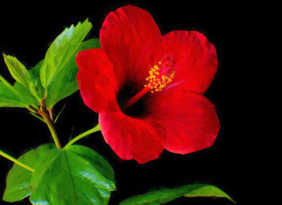

Rio Verde

En la oscuridad de la noche me miraba con los ojos vidriosos. Me miraba sin verme.
Estaba muerto ya.
La luz de la luna llena penetraba por la ventana en la recamara y sus reflejos brillaban en los ojos de Jidres.
"Lo maté" - pensé, - "Yo lo hice..."
Hace una semana cuando ví por primera vez el Río Verde ni siquiera pude imaginar que las cosas iban a acabar así.
El estaba apoyado contra la pared. La sangre chirriaba por su mano y las gotas negras en la penumbra caían en el suelo, donde estaba su machete con manchas sangrientas.
¿Era su sangre o sería la sangre de aquel zombie que Jidres había matado en la pirámide?
- Michael, - llamé en voz baja.
El periodista apareció en el umbral.
Vió a Jidres y después miró a mi con el aire desconcertado. Su rostro se palideció, sus labios temblaban.
- ¿Quién lo hizo? - preguntó.
- Yo, - susurré.
En mis ojos no había ni una lágrima. Era imposible llorar este noche encantada.
- Ayúdame a traerlo al canoa. Lo llevaré al otro lado del Río.
Ambos llevamos al muerto hacia el canoa que estaba cerca de la choza. Su cuerpo era pesado, demasiado pesado... Por fín lo pusimos en el bote. Tomé el remo mientras Michael empujó el canoa en las aguas tibias del Rio Verde
Cuando estabamos atravesando el Río el tiempo se paró.
Michael se desapareció en las sombras nocturnas de la orilla.
Miriadas de velas en balsas pequeñas rodeaban el bote, pasando por el río
Era el Día de los Muertos.
El día cuando los muertos vuelven para visitar a los vivos.
Los aguas furiosas del río tropical aquel día siempre se quedaban apacibles como si fueran hechizadas. Las luces de estrellas y de velas reflejaban en el agua que chirriaba de mi remo.
Varias veces me pareció que Jidres me miraba y me sonreía con su sonrisa maliciosa. ¿Quizá no estuviera muerto? ¿O era la danza de las sombras en su rostro?
"¿Quién dijo que los muertos no sonrían?"
Me pareció que escuché el eco de sus palabras: "Per siempre..."
Desde el cielo nos estaba mirando el Murciélago Estelar.
El río era Estix y el Charón era yo.
Cuando llegamos al centro del río recordé las palabras del chamán. Por fín llegó el momento de tomar la desición en que mundo iba a quedarme.
No quise sopesar los pros y contras - lo había hecho toda mi vida. En cambio, pregunté a mi corazón, donde estaba mi camino sobre la tierra. Era la hora de actos precisos, no de vacilaciones. Si titubeara el Poder de la Noche me mataría.
Recibí la respuesta.
De vez en cuando el río atravesaban canoas.
De la orilla en que había estado salían canoas de los vivos y de la orilla opuesta... ¿De los muertos?
En el lado opuesto me estuvo esperando el Cocodrilo. Al ver acercarse el canoa se apresuró a ayudarme.
- La culpa fue mía, - dije al mirar en sus ojos
- No, - contestó, - hoy no hay culpables, ni vivos, ni muertos. Es una noche especial. Vete al carnaval, te están esperando.
- Pero... - dije, refiriéndome a Jidres
- Vete, no mires atrás. Recuerda la leyenda de Eurídice.
Entonces me dirigí hacia la Fiesta. Iba por un sendero en la maleza.
Pronto vi un círculo rodeado por los fuegos. El ritmo de tambores creó una especie de telaraña eléctrica donde la gente bailaba tajita. La música tenía un rico sabor tropical y penetraba hasta las profundidades del corazón.
- Gina, ven aquí, - escuché el grito de Charlie
El periodista estuvo vivo, en su rostro vi una sonrisa alegre.
Aquí, en este loco carnaval ví a los demás. Más allá estuvo mi abuela bailando con un hombre de sombrero ancho. Aquí estaba todo el mundo, y todos andaban alegres por la mágia de la noche festiva
De repente la música se paró. La telaraña del ritmo se congeló. La gente se petrificó en las posturas en que había estado bailando.
Vestido en la cazadora de cuero, botas altas y sombrero vasto, en el centro del círculo entró Jidres. Nuestros ojos se cruzaron. Me miraron dos abismos negros.
- Gina, amor mío, ¿no has esperado verme? Esta noche nadie muere de verdad.
* * *
Una semana antes...
- ¡Bienvenidos a Caosalem! - dijo Michael con una sonrisa sarcástica, bebiendo a tragos su coctel de cereza y jiss.
Acabamos de llegar a un hotel a la orilla del Río Verde. Así los nativos llamaban su país, Jeotzalem que los turistas por algunas razones bautizaron como "Caosalem", el mundo donde reina el caos. En mi cabeza todavía se oía un eterno alboroto de la calle. Al salir del avión cerré los ojos por unos instantes ya que el sol era insoportable. El aire como si contuviera un fuego invisible y fue lleno de aromas de miles plantas exóticas. Cuando pasó el primer asombro me encontré en una región encantada, en un paraiso de helechos y filodendros, las orquideas y platanos que acá compraban solo turistas. ¿Para que comprar lo que uno puede tener gratis sin menor esfuerzo?
- Ustedes ya verán, que acá no es un paraiso de sol, río y música, - prosiguió el periodista, - Al contrario: acá es un verdadero infierno. Es la más terrible zona turística que he visto por toda mi vida. La gente sonría con sus sonrisas maliciosas, pensando como venderte una baratija o como robar no importa que sea. Sonrían por el día y matan por la noche. Aca no es Tradelex
Como el mesero ya se perdió de vista por completo después de una bullaranga el barmen mismo se acercó a nosotros, nos trajo nuestros vasos de cocteles fantásticos, en el fondo de cada vaso flotaba una palmera pequeña entre arena. Al cabo de un rato estamos bebiendo estos oasises. Como fui la única mujer en nuestra companía, recogió una flor roja de la liana, colgada en el techo y en un cerrar y abrir los ojos me construyó un prendedor y lo puso en mi pelo muy delicadamente. Después me quedó mirando un rato con su sonrisa vasta. Cuando se fue Michael continuó:
- Ahora empiezo a entender porque Den al recoger los datos necesarios se echó a huir sin siquiera avisar el periódico. Simplemente ya no pudo soportar este maldito lugar.
- Anda, no digas tonterias, - replicó Charlie, un periodista reportero con quien acabamos de venir de Tradelex, - no creo que hubiera podido dejar de salir de sus manos así de fácil un dineral que la revista le hubiera pagado por su reportaje! Me gustaría saber, cuál era la verdadera razón? ¿Tal vez averiguara algo peligroso y lo empezaran a perseguir?
- La última vez que le llamé me dijo, - contestó Michael con sonrisa amarga,- que hasta daría un millon si lo tuviera con tal de que lo sacaran de aquí. Recuerdo que su voz temblaba.. les juro que le pasó algo grave. Lo conozco desde mucho tiempo, nunca había tenido problemas con nervios, era un hombre tranquilo como un boas.
Las últimas palabras Michael dicho en susurro tan ruidoso que los visitantes del cafe en el vestíbulo del hotes nos miraron un buen rato y escuché unas chiringotas que dijeron en voz baja. Por lo menos hablabamos el idioma que los nativos de Jeotzalem no entendían ya que los jieos patalógicamente no deseaban aprender idiomas.
- ¿Pero ya tienes alguna idea que le pudiera pasar? He oído hablar de que te dejó algunos datos que había encontrado - preguntó Charlie
Los ojos de Charlie brilliaron. Al ver su rostro, o sobre todo después de intercambiar con él un par de palabras cada uno se daría cuenta de que es un periodista hasta los tuétanos. Sin dudas nació para ser periodista. Sus ojos, siempre anciosos, miraban a todos lados en busqueda de algo incoherente, de una pequeña mentira, de un fracaso para escribir un articulo escandaloso. Su manera de meter sus narices en todo por fín me empezó a caer mal. Charlie era uno de los que siguen gritando "última pregunta" hasta despues de que el carro de una estrella ya se oculta de vista.
- Les diré más tarde, en la habitación, - Michael le hizo una señal con la mano para que no le preguntaramos más, después agrego con amagura: - no vale la pena siempre meterse en todo. La gente que oculta la verdad tiene razones para eso. De seguro pobre logró saber algo pero tuvo que pagar un precio muy caro.
Michael era de otra clase de gente: la gente invisible, como los llaman. Si viene contigo en autobus nunca recordarás cual era su rostro, su color de piel, si tenia lunares o no. Pero el sabía todo de todos, ya que a veces la gente hablaba de sus cosas en su presencia sin que se diera cuenta de que esuchaba todo. Ese su talento le permitió averiguar unas detalles chocantes de la vida de gente famosa. Pero con todos los demás, que no le interesaban como victimas potenciales era un hombre común y corriente.
- ¿A proposito, donde está nuestro camarero? Desapareció como si la tierra lo hubiera tragado. Si no aparece en cinco minutos irémos sin pagar, - dijo Charlie en voz alta
El camarero apareció de ninguna parte, como si solo la pregunta de Charlie lo hizo existir.
- Pero bueno, - dijo Michael, - ahora quiero escuchar algo de ustedes. A tí, Charlie, te conozco hace mucho, pero no puedo recordar a tu compañera. ¿Gina, trabajas en una revista? - me preguntó Michael.
- No soy periodista. Trabajo en NetPlanet, hacemos proyectos, diseños, eso de propaganda... a jieos les al fin y al cabo ocurrió que están perdidamente atrasados en esta tecnologia y nos ofrecieron colaborar. No quise perder el chance de viajar al país donde nació mi abuela. Mi jefe y Charlie son amigos por eso viajamos juntos.
Yo lo decía probando por primera vez el jiss. Al principio me dio asco. No tuve ganas de seguir bebiendo. Sin embargo al cabo de un rato sentí que su sabor se alteraba en mi boca. Por curiosidad hice otro sorbo, y en pocos instantes me di cuenta de que había algo misterioso en esta bebida que me atraía, algun ingrediente enigmático. Pensé un rato sobre este pais donde la gente parecía pobre pero feliz bajo este sol inagotable. Los ritmos de musica vivían en su alma, su vida era una ta-ji-ta, una baila caliente de jieos. Un pais agotado por periodos de dictadura, cambiados por breves periodos de caos democrático, quemado por el sol despiadado, pero algo siempre me atraía cuando había escuchado sobre el Rio Verde, algo me agitaba como el bochornoso viento que traía aromas de mundo ajeno.
* * *
Charlie y yo alojamos en un número de habitaciones contiguas. Michael vivía en el numero vecino. Cuando por fin Michael nos invitó en su habitación ya había imaginado cien horribles historias, lo que podría pasar con Den, una más horripilante que otra. Michael sacó una cartera de fotografias y unas notas ubicadas en caos completo.
- Así que miren ustedes, les contaré todo lo que sé, - empezó Michael con el aire de un conspirador, revolviendo unas papeles de bordes rotos, graseosos y torcidos por el peso de las historias que contenían. Los testimonios como fantasmas aparecían uno por otro en los manos de Michael, cada uno con su nueva aroma, de sierra y del mar, de dunas y arboles sombreadores de selva, de luna y de sol con la salsa de imaginación generosa de periodista
- Como saben, los ingredientes de jiss están en secreto. Nadie sabe a ciencia cierta como se prepara. Lo mismo pasó con Coca Cola.
- ¿Y que tuvo que ver Den con todo eso? - preguntó Charlie
- El quiso averiguar el secreto y, puedo suponer, que por fín lo logró.
Al decirlo Michael se calló
- Entonces en verdad tienen algo que ocultar? - pregunté - ¿Hay algun componente prohibido por la ley?
- Los datos, que dejó Den, no son completos, sin embargo... - contestó Michael
- Entonces, ¿es verdad que en jiss hay algo de jojobra? - lo interrumpí.
He escuchado varias historias horribles de prensa amarilla del parásito que compraban en callejones oscuros con tal de tragarlo por su propia voluntad ya que secretaba un veneno que traía una felicidad incomparable con nada. Jojobra... una droga perfecta y mortal. Pero esto parecía a un cuento que mejor escuchar por la noche para desprenderse de las ganas de dormir, y que bajo la luz solar perdía toda su magia negra.
- Chitón, - dijo Michael, en sus ojos aparecieron unos chispes helados de miedo, - habla en voz baja.
- Entonces la prensa amarilla no miente en todo cuando dice que acá venden un parásito? Es como en estas numerosas leyendas, - dije, - unos turistas beben la infusión con larvas del parasito, él se desarrolla en su organismo y los convierte a unos zombies. Despues les llevan al otro lado del Rio Verde donde trabajan para producir nuevas porciones de parasito
- Tal vez no estés muy lejos de la verdad... - dijo Michael mirándome a los ojos con una mirada sombría.
Charlie sonrió con el aire frio y meditativo:
- Y claro que como siempre en cosas asi nadie conoce quienes son los dueños de este negocio de jojobra y nuestra tarrea, como de los verdaderos profesionales, encontrar quienes son, - dijo Charlie con cierta ironia
- Al contrario, - contestó Michael, - Ya conocemos algo de ellos. En este país donde todo está patas arriba, todo se compra y se vende, unas cosas que se compran por el oro y pueden venderse a precio de una bisuteria o por una buena palabra es muy difícil ocultar algo. Y ahora, llegamos a su parte en este asunto, - Michael sonrió con el tipo de sonrisas de que no vale la pena esperar nada bueno, - ya he arreglado todo. Esta noche uno de ellos les va a esperar en un café. Tendrán que hacer una entrevista.
- ¿Uno de esos dueños de laboratorio secreto donde producen jojobra? Me parece a una broma de mal gusto, - contesté
- Nos espera para contarnos toda la verdad, ¿no es asi? Y lo hara de buena gana sin dudas, - dijo Charlie en voz burlona.
- Esto sería demasiado, - contestó Michael sonriendo, - les va a esperar para contestar a unos preguntas sobre la revolución, las cosas del pasado que casi no tienen coneccion con lo de jojobra. Además, no creo que tengan laboratorios escondidos en la selva en el otro lado del río. Me parece que el proceso de producir jojobra no está muy complicado. Pero ustedes tendrán que mostrarle unos papeles que les daré, - en su cara apareció una sonrisa torcida, - para que se diera cuenta de que saben algo de sus actividades, pero no le digan todo lo que saben, les puede resultar peligroso, solo como si hubieramos escuchado unas aluciones, unas chismes. Después miren bien su reacción.
- ¿Por qué tú mismo no hablarías con él?
- Hoy tengo una entrevista con Marisa Jonjoles, una estrella de tajita. ¡No soy el Diablo para estar en dos lugares a la vez!
- Ay, Michael, ya veo que no quieres mezclarte en eso, - dijo Charlie
- Bueno, si.. tienes razon. No quiero mezclarme. Den se mezcló y pago un su precio. Yo no soy un loco fanático de secretos ajenos. Solo les deseo que salgan con vidas de aquí. Hoy tengo esta última entrevista y después preparo mis maletas para salir de este condenado país.
Michael nos miro con una mirada indiscifrable
- ¿Ya quieres huir como Den?
- Es que estoy aquí un poco más que ustedes
- Creo que la magia de este lugar te contagió, - contestó Charlie, - sus chamanes, su culto de la Muerte... hay en estas cosas algo perverso que sin embargo atrae a los turistas. En cuanto a los jieos.. son barbaros. Me parecen salvajes
- Así son los nativos, salvajes, pero viven en su propio mundo y no quieren ningunas interferencias, - contestó Michael, - sobre todo, tienen un sentido del tiempo muy especial y son hipócritas. Si uno de nativos les dice que "sí" eso podría significar muchas cosas como "tal vez", "quien sabe", "si tengo ganas" o simplemente "no". Para entender lo que en verdad quieren decir hay que saber descifrar unas pequeñas matices de la voz. Sobre todo, uno nunca puede entender su estado de animo. Ahora sonrían, dentro de cinco minutos se enojan, después cantan canciones románticas... es una gente imposible...
- Pues bien, - Charlie interrumpió a Michael, - y en cuanto a Den...
- La última vez cuando hablé con Den me dijo: escuchame, entre jiss y jojobra hay un enlace, hay algo que los une. Entonces me pareció imposible que pusieran jojobra en jiss y lo vendieran a los turistas. Como acabo de decir, la receta de jiss está bajo un secreto y nadie tiene ganas revelarla. Todos tenían ideas, suposiciones de que se hace pero nadie sabia todos sus ingredientes. Pero la Organización de Salud puso una condicion: si uno de los turistas se encuentra envenenado por jiss, ellos tendran que revelar el secreto enseguida
- Pero entonces, si ellos hubieran puesto veneno en jiss, esto ya habría sido notado
- No digo que mezclan jojobra con jiss. Solo digo lo que me dijo Den: hay una conección entre estas dos cosas.
Después nos instruyó un largo rato que preguntas tenemos que hacer y que evitar en esta entrevista para no causarle sospecha
- Se llama Jidres. Por ahora su jiss se concidera el mejor en todo el Rio Verde. El, como todos los que tienen poder por aca tiene sus locuras y sus caprichos. Asi que no se sorprenden al verlo.
- Lo único que no entiendo, - replicó Charlie, por qué este Jidres esta interesado en hablar con nosotros, perder su tiempo en un cafe. ¿Y por qué no nos llama a un lugar más privado, a su mansión sino prefiere a hablar en un cafe?
- Mansión, dices, - Michael se rió, - Ustedes todavía no están acostumbrados a este Absurdistan. En el cafe sería mucho más comodo para ustedes, que en alguno de sus "mansiones", se lo garantizo, - pronuncio la palabra "mansión" con una cierta mofa.
Hablando claro, yo no creí en estos cuentos de zombies y de parásito que tanto atraían a mis compañeros. Los periodistas son así, a veces hasta parecen a los niños que juegan en un juego terrible con sus conjeturas ridículas, pero eso es su ganancia al fin y al cabo. Este Jidres podría ser un bandido de los que vendían armas, drogas o cosas por el estilo o podría ser una persona común y corriente. De todos modos, no había nada extraordinario en eso. Pero para hacer un buen artículo necesitamos zombies, calaveras de brujas, magia negra, ¿no es asi? ¡O laboratorio de Frankenstain donde de zombies y de parásito hacen monstruos cuyos lágrimas son jiss! Así ya tenemos una coneccíon entre jojobra y jiss, ¿acaso aun necesitamos entrevista con este Jidres?
Salí al balcón y miré al Río Verde a lo lejos. Este río no atraía a bañarse en sus aguas. Se retorcía como si fuera una enorme serpiente salvaje que durante tantas años no pudo tranquilizarse. Y nunca se calmaría mientras el sol no la secara. Se decía que el Río Verde es el alma de los jieos: viva, salvaje y libre. El río incluso se oía mejor que se veía - la maleza densa y baldaquino de las palmeras ramosas lo escondían en cambio su silbido serpentino llegaba de todas partes.
El río se calmaba solo por un día en el año - en el día de los Muertos.
De repente el río me recordó el Nilo - un fuente de la vida principal de los jieos, una arteria rodeada por la selva. Como en Egipto, la vida en Jeotzalem se concentró en ambos lados del Rió. Más allá estaban los desiertos de dunas arenosas y aquí en dos lados del río como si fuera un oasis.
Por fín Michael se fue a la intrevista con Marisa y nosotros salimos a pasear. Bajo ese sol abrasador todo convirtió en los ritmos de musica, risas y cantes de guitaristas sentados en las calles que cantaban de libertad o dedicaban canciones a Benefactor como si hace tiempo fuera el intimo amigo de cada uno. A la hora de comer compramos lagartos asados en la salsa.
- ¿Qué piensas sobre todo eso? - pregunté a Charlie refiriéndome a la conversación con Michael
- No se... tal vez Den tomó algun alucinogeno que le ofreció algun chaman de aquí y se volvió un poco tocado. Y sin embargo Michael creó en sus locuras
- Pero en cuanto a Jidres?
- A decir verdad, no me gustaría encontrarme con este tipo. Donde Michael lo encontro? Pero de otra parte... podríamos hacer un buen reportaje...
En la calle un muchacho quiso vendernos una milagrosa balanza que permitía no solo pesar mango y platano sino que tambien permitía sopesar los pros y contras antes de emprender un asunto dificil.
- Cómprala, luz de mis ojos, no te quedaras desepcionada, - me dijo el pobre diablo.
Le negué pero nos seguía hasta las puertas del hotel.
Por la noche Charlie se sintió muy mal, tuvo indigestion por comer tantos lagartos asados, pobrecito, asi que ni siquiera pudo salir del hotel. Pero cuando se dio cuenta de que no puede asistir la entrevista ya era tarde.
- Mira, vamos a posponer la entrevista, - le dije, - Solo lo llamamos y le proponemos postergar el encuentro hasta mañana
-Estas loca? Acaso Michael no te ha dicho que caprichoso es? Hoy tiene ganas matar su tiempo contestando a nuestras preguntas y mañana de este modo tendrá ganas de mandarnos a la mierda. Es imposible
Parecía que situacion no tenía solución
- Vamos, no te desesperes, - le dije - yo sola iré a la entrevista
Por supuesto dijo que no, que en verdad estas loca, pero en este momento no sé que me pasó, de donde tuve tantas ganas de persuadirlo como un vendedor en el mercado asiatico que trata de persuadir a uno comprar su bagatela y no le interesa en precio sino el proceso de regateo, como si fuera un juego. Al persuadirlo por fin tuve muchas ganas de quedarme en hotel pero no lo hice.
* * *
Un vaso de agua fresca me devolvió mis fuerzas después del dia de color sofocante. Seguía bebiendo sin sentir sed, solo porque agua fresca me causaba placer inexplicable. Nunca antes una mezcla de agua con jugo de naranjas fue tan deseada para mí. El cafe no era muy ruidoso, todos sus visitantes se volvieron flojos y soñolientes. LLevé esperando a Jidres casi una hora. Si yo estuviera en Tradelex me iría dentro de unos quince minutos ya que odio esperar, pero aca todo me parecía tan singular que me llamaba quedarse. A la entrada del cafe un muchacho solo por tres daijones me ofreció una maquinita que sabía no solo sacar jugo de frutas sino tambien sacar jugo de conversaciones moralizadoras para que uno no vuelva repetir las mismas faltas y una cajita que sabía guardar sueños lindos si ponerla cerca de la almohada.
Por fin apareció Jidres. Era un hombre no alto pero fornido, de pelo negro áspero y largo que caía en sus hombros. Su pelo ocultaba parcialmente una cicatriz profunda en la frente. No parecía tener más de cuarenta años sin embargo en su rostro se veían arrugas profundas.
Sus manos un poco encorvadas por mucho trabajo tenían un aire de patas de un pajaro pero sus dedos secos fueron generosamente adornados de anillos de puro oro como me pareció. En líneas generales, su aspecto inspiraba algo espantoso y tal vez un poco repugnante algo que era de Satanás. Pero sus ojos que siempre brillaban, tal como si tuvieran unas gotas de lagrimas mirando maliciosamente conquistaron mi atención poco a poco.
- Perdón si te hice esperar, luz de mis ojos, - dijo con una sonrisa dulce que como si me tratara de engatuzar. Se portaba con tanta desenvoltura como si me hubiera conocido ya varios años, debo reconocer que esto me desconcentró al principio pero después me inspiro una rara simpatia por él.
- No se preocupe, no le llevo esperando mucho, solo una hora, no más
No se molestó por mi burla, la contrario, se sonrió.
- Ya sabes que nosotros los jieos tenemos nuestro propio tiempo, ¿verdad? Aca cinco minutas a veces igual a cinco horas y si fijas con alguien una hora tienes que llegar tarde por lo menos en una hora, o tu amigo va a molestar contigo porque con tu comportamiento le muestras que el es un chancho impuntual que te hizo esperar.
- Bonita logica!
- Cómo te llamas, mi vida? - preguntó él.
Aca, en el Río Verde hasta una vendedora en la tienda te puede decir "que quieres comprar, amor mio" pero esto no quiere decir que en verdad al verte le inspiraste mucho amor, sino que así son los costumbres, pero yo no pude acostumbrarme así de fácil.
- Gina.
- Es un nombre de jieos.
- Así es. Mi abuela nacío aca y aca vivío los primeros años de su vida. Después volvió aca para morir cuando le quedaba muy poco de la vida. Hasta podría decir que soy un poco jieos.
- Esto vamos a comprobar. Pero bueno, vamos a empezar la entrevista. ¿Qué quieres saber? - dijo mirándome con sus ojos negros profundos.
- Quiero saber algo de los jieos, de la revolución, entender lo que pasa por aca. Ustedes los jieos tienen un modo peculiar de ver las cosas, a veces nos resulta una esfinge adivinar sus hechos, sus ideas. He oido hablar de que usted conocia a Benefactor. ¿Es verdad?
- Si, es verdad. Pero tus ojos dicen que deseas preguntar otras cosas, - dijo Jidres, sonriendo, - Anda, dimelo, a mi no me tengas miedo, no te haré nada, por lo menos ahora. A proposito, has probado tayaxajitamale?
- Todavía no...
- Entonces, lo tienes que probar.
Antes de que yo pudiera contestar, llamó al camarero con un gesto de su mano y pidio dos tayaxajitamales.
- ¿Que deseas saber de verdad? Ya basta perder el tiempo, - me dijo con el aire frio y serio, pero después se sonrió otra vez
Entonces me arriesgue jugarme todo a una carta. Me acerqué un poco y dijé en voz baja, pero como si fuera en broma.
- Quiero saber el secreto de jiss
Unos segundos me miró, de repente echó a reír.
- A mí también me gustaría saberlo, aunque no lo creas. Sólo soy un comerciante corriente, lo compro en un lugar y vendo en el otro.
Esa era la respuesta que esperaba, pero en este momento lo que quise es ver su reacción. Ni un musculo en su cara no traicionó su engaño.
- Pues todos aca somos así, compramos y vendemos, cada uno tiene su pequeño negocio. Pero no hay mucha diferencia entre este chico que vende el tiempo en la calle y entre mi. Yo gano un poco más. Eso es todo. Mira, aca no es un paraiso y todos tenemos que ganar como podemos, porque nadie piensa en nosotros si nosotros mismos no lo hacemos. Pues ahora quiero cambiar un poco las condiciones de entrevista. O sea yo seré el quien va a preguntar, ¿está bien?
- Pregúnteme lo que quiera - contesté un poco sorprendida.
- ¿A que tú te dedicas?
En este momento me pareció que se había dado cuenta de que no soy periodista. Le miré en sus ojos y dije la verdad.
- Trabajo en empresa de NetPlanet, hacemos preoyectos, diseños, eso de propaganda...
El frunció las cejas.
- Cuanto te pagan por tu trabajo?
- Bastante, no tengo problemas con dinero, puedo permitirme lo que me plazca.
Estuve perpleja, todavía no pude entender sus motivos
- Donde aprendiste hablar el jieos?
- Me enseñó mi abuela y me enseño cantar canciones en el jieos.
- Y cuantos idiomas hablas?
- Cuatro.
- Entonces la última pregunta: ¿Qué es lo que una mujer con tan brillante porvenir hace en este pobre país? Mira, ya tienes todo lo que uno puede desear, no necesitas nada más y buscas algo que altere tu vida, algo exótico? ¿O unas aventuras? Ustedes sacan fotos de estos chicos de las calles que lloran porque no han comido, después le dan pan creyéndose generosos, después ustedes ganan con estas fotos. Y en tu país las mujeres tan limpias y deseadas como tú, esas mujeres que tienen piel en las manos como seda ya que nunca tuvieron que trabajar duro en la tierra al ver las fotos se ponen triste por estos pobres niños y sus maridos mandan dinero a nuestro pobre país sabiendo que por mecenazgo no van a pagar tantos impuestos de sus negocios...
Lo dijo en un tono insolente de provocación. Ya no pude controlarme, pero no quise permitirle provocarme. ¿Y que derecho tenía él decir de mi cosas que ni se daba cuenta! Qué sabe de mi este pobre diablo?!
- Yo no busco aventuras, para que Usted sepa
Pronuncie "usted" con una cortesia farsa para que se diera cuenta de que nadie le dió permiso aún tutearme.
Expresión de su rostro se altero en momento, en los labios apareció una sonrisa. Me pareció que el estaba estudiándome, no yo a él.
-¿Entonces qué es lo que has olvidado en este pobre mundo?
-Una de sus impresas hizo un contrato con NetPlanet, me invitaron y yo vine. Ellos quieren aprender nuestra tecnología - le dije tratando de ocultar mis molestias. ¿Por qué este salvaje, que ayer apenas salió de palmera dejando su tambor para ser un rey de jiss, tiene el derecho hablar asi conmigo?
- ¿Pero que es lo que esto tiene que ver con lo que acudiste a entrevista ajena? No te molestes, linda, pero desde el principio me di cuenta de que no eres una de esa gente fastidiosa que siempre hace preguntas estupidas esperando tu falta para escribir un artículo escandaloso.
Se quedó callado por un rato, estudiándome
- Además, si nuestra gente necesita su tecnologia por qué fuiste tú quien viajo y no ellos?
En verdad nunca me había puesto a pensar en eso
- Me invitaron y yo fui. Me gusta viajar, quise nuevas impresiones.
- ¿Y que ahora esperas de mi?
- El secreto de jiss, - contesté mirando en sus ojos, ya casi sin contener mis molestias. ¿Acaso es SU entrevista? Pero le dije con tanta terquedad que en este momento casi creí en la verdad de mis palabras. Quise saber este misterio a todo precio.
- Dime, crees que es verdad lo que dicen, sobre unos zombies que llevan en si un parásito? O tal vez hayas escuchado otros cuentos. De todos modos, creo, que los que lo mantienen en secreto tienen razones para ocultarlo, esto no se hace solo por un capricho de alguien. Y a los que ocultan algo no les gusta la gente que lo quiere revelar. Un consejo de un amigo: no te metas en lo que no te incumbe, yo no me meto, por esto aún estoy vivo. Si te pasa algo, si te enredas en problemas ya te darás cuenta pero será demasiado tarde. Vuelve de donde has venido, aca harás una fortuna con tus deseños.
- No, Jidres, en verdad lo quiero saber. Y no voy a volver sin la verdad.
- Ya me gustas, eres muy terca. ¿Pero si te matan, entonces?
- Todo puede pasar... Entonces mejor no vivir para no arriesgarse, darse por muerto para no morir...
- Son palabras. Cuando te encuentres con realidad, asi, tan ajena, desconocida, injusta, darás lo que sea para volver a tu mundo. Eres ajena aca, este mundo no es para ti. Podría apostar en lo que quieras que sería así pero en verdad no quiero que esta opuesta se cumpla.
- ¿Quién se lo dijo que no es para mi?
- No te molestes. Como dicen, a cada uno lo suyo. ¿Has visto los ojitos de pobres muchachas jieos como les miran a ustedes, no es así? O nunca te has dado cuenta o te llamó atención. Pero yo si lo he visto. ¿Quieres que te diga como son? Ya no lloran, ya no sientan envidia, se acostumbraron, eso es lo peor, se acostumbraron a lo que ustedes de alla, con porvenir brillante, con sus vestidos que valen un millon y ellas de aca, vestidas en trapos baratas, porque tuvieron la culpa nacer aca y ser jieos. Si tu abuela no hubiera logrado salir de aquí, no habrías recibido una educación, ahora estarías descalza en la calle vendiendo billetes de loteria a los turistas...
- Bueno, al saber el secreto me iré.
- Y al ganar tu millon de reportaje.
El echó a reir otra vez. Me pareció que estaba burlando de mi, yo trataba de ocultar mi molestia.
- Pero bueno, en que YO te puedo ayudar, cariñito?
- Quiero saber como se hace jiss.
Sonrió maliciosamente.
- No sé ni tengo nadie que lo sepa. Búscalo si quieras.
- Sé que lo sabe... - dije de una manera pensativa mirando en sus ojos
Saqué una lista con datos que Den nos dejó y los mostró a Jidres. En el momento siguiente me asusté. ¡Dios mío, que estoy haciendo! Que, en verdad me volvi loca ya que le acabo a echar a la cara todo lo que conocemos de el en vez de sacar la verdad poco a poco... pero en cuanto a sacar la verdad de alguien, nunca sabía como lo debe hacer.
Ni un musculo en su cara se movio, seguía sonriendo maliciosamente, un poco sorprendido pero con el aire como si todo fuera una broma. En un momento me pregunté: en verdad mis datos fueron verdaderos, si no entonces... ya me cree una loca.
Por fin se rió a carcajadas
- Les felicito, - dijo , - saben muy bien mezclarse en lo que no les incumbe en absoluto. Qué profesión, robar secretos ajenos! Gracias a ustedes tenemos tan buena fama mundial, que casi hacemos zombies de los turistas. Lo peligroso siempre atrae, ustedes nos hacen tanta propaganda! Pero no sé en que YO te podría ayudar.
- Si, ya veo que en nada. Entonces voy a seguir su consejo y voy a volver. Para no volver con manos vacias tendre que publicar lo que ya conozco de su actividad.
Me miró un instante
- ¿Ya me tratas de chantajear? No lo haría en tu lugar...
- ¿Chantajear? Yo? Pero si usted dice que en verdad no sabe nada que esto puede tener que ver...
- Qué astuta, no? Y sobre todo muy terca. Bueno, en verdad ya me gustas, cariño.
Y dentro de un instante, mirandome dijo en la voz baja y en voz insinuadora:
- EN VERDAD quieres saberlo?
- Si pues... entonces por que estoy ahi? - su pregunta me dejó perpleja
- Lo sabrás. Te lo prometo. Créeme.
De repente sentí una amenaza escondida en su sonrisa engatuzadora. No pude entender su mirada. Miré alrededor. En el cafe lleno de gente no me podría pasar nada.
- ¿Me quieres ayudar? - pregunté
- ¿Por qué no? Acaso en verdad no tienes derecho saberlo? - dijo como si tal cosa
Se hizo una pausa pesada.
- Quieres saber todo de estes zombies que hacen jiss? Y nunca te has preguntado quienes son estes zombies? A ver, piensa.. que tal si son unos curiosos como tú? Acaso podemos dejar ir el secreto así de fácil? Siempre se encuentra alguien quien logra saber algo que no debe saber... Y no nos deja otra salida como...
Ya no pude soportar su mirada
- ¿Matarle?
El mi miraba con una amenaza en sus ojos irrisorios. Hasta en el calor sofocante del cafe senti un arroyo frio en mi espalda. En cafe todo estaba como antes, la gente reía
- Crees que este cafe te va a proteger.. si, pero solo unas horas.. por la noche cuando escuches el sonido de cuchillo bien afilado en tu recamará vas a pedir el diós la salvación, vas a llorar, porque tienes que pagar con tu vida todo lo injusto que está pasando, para que estas muchachas note miren más con esta envidia desolada.. Y cuando veas con tus propios ojos como se hace jiss, maldecirás toda tu curiosidad, cuando te des cuenta de que tus manos y piernas ya no te obedecen, ya que eres medio zombie, solo cumplen los ordenes de un pobre jieos que te lleva el parásito... y así empezará tu pesadilla...
De repente echó a reír como un loco.
- Ay, te asustaste, no sabes, que placer fue mirar estos ojitos atemorizados, caiste con tanta facilidad!
Sentí que como si de mi cayera algo pesado.
- No he esperado que mis palabras vayan a producir tal efecto, - dijo Jidres
- El ambiente dejo de ser tan congelado, el cafe como si empezara a existir en este momento porque todo se había desaparecido por un instante en una completa NADA y el mundo se redujo y fue nada más que un reflejo de sus ojos negros.
- Disculpa si te asusté. Lo que quise era un poco burlar.
- Muy buena broma, muy divertido, - dije un poco molesta.
- Le recomiendo olvidar los chismes que sabes de mi, ya te he dicho: aca todos hacen negocios. Les dijeron estas chismes, ustedes pagaron, creo que hasta ahora estos personas que les dijeron este "gran secreto" no pueden olvidar con que facilidad se la dieron con queso a estos ingenuos periodistas. Así que puedes publicarlo, es una nueva mentira que nos va a traer más popularidad, lo que ahora necesitamos.
Y después agrego:
- Pero en algo si te puedo ayudar.
- De veras?
- Si. Ustedes quieren hacer un reportaje excepcional, verdad? Les llevaré al otro lado del río así lograrán por lo menos sacar fotos de algunos lugares interesantes, escuchar unas leyendas, hablar con nuestros chamanes para no volver con manos vacias. Por regla no lo muesto a los periodistas pq son fastidiosos como mosquitos, pero tú si me gustas con tu curiosidad inmensa.
Mis temores volvieron otra vez... "Nos llama alla para... a lo mejor para matarnos, claro, así no diremos nada"
- Tranquila, no tengo ganas de matarles
Creo que le miré muy sorprendidamente.
- Je, tampoco sé leer tus pensamientos. Te traicionaron tus ojos, que me cuentan todo de tus temores. Pues si no te atreves no te vayas. Pero así no ganas. Decide. Si estas de acuerdo, entonces podemos hacer un trato
- ¿Que trato?
- Les voy a mostrar lugares muy "exoticos" y después de escuchar todos los leyendas del Rio Verde ustedes deben escribir una leyenda, un reportaje con zombies, con parásito, con espiritus de la maleza, senderos gatunos, horribles muertos que vuelven del otro lado del río en el día de los Muertos... A proposito, será dentro de una semana. Creo que ustedes saben como exagerarlo todo para que inspirara temor.
- ¿Por qué lo necesitas? Me confundiste... ¿quieres que escribamos de ti lo que sabemos?
- Exacto. Quiero que lo exageren aún más. Necesito una propaganda para que mi jiss se vendiera mejor. Así que yo ayudo a ustedes y en cambio ustedes ayudan a mí. Ustedes de NetPlanet saben hacer propaganda, de eso no tengo dudas. Me pondré en contacto con nuestra empresa que te invitó aquí. Así que sin dudas juntos podremos organizar algo interesante, te parece?
- Muy bien
- Solo hay varias cosas que nunca ustedes deben escribir. Pero no tienen nada que ver ni con jiss ni con jojobra. Ustedes no deben revelar la verdad.
Su mirada otra vez se volvió indiscifrable
- ¿Qué verdad?
- Mira, - dijo y escuché en su voz una matiz de tristeza, - ustedes nos llaman Caosalem, un reino de caos... ¿No te has preguntado por que somos así? Por qué en toda nuestra historia habían revoluciones... por qué nosotros, los que viven en un pais más rico del mundo - tenemos petroleo, esmeraldas, oro y otras cosas preciosas, estamos tan pobres? ¿Por qué somos tercermundistas? Lo que debes ocultar, es como la gente en alguna universidad de Tradelex, del pais de donde vienes, elaboró esquemas de revoluciones. Nosotros fuimos sus conejillos de indios, su polígono donde ellos armaron un caos completo y total. No somos así. No tenemos impulso autodestructivo. No nos gusta vivir en pobreza. Quieremos luchar contra todo eso pero cada vez nuestra lucha se convierte en otra revolución... y todo va según su escenario. Hasta te puedo decir los apellidos de los que están mezclados en todo eso y datos importantes, no una basura inventada como tu me mostraste. En cuanto tengan bastante experiencia, van a organizar revoluciones en otros continentes, te lo prometo. Pero te lo repito - nunca escribas nada de eso, o serás para siempre persona non grata en Tradelex. Un día desaparecerás y nadie sabrá nada de ti. ¿Me entiendes?
- Sí, - dije con el aire meditativo
El me contagió con su tristeza. Al ver mi mirada, trató de cambiar el tema
- Pero en cuanto a los zombies... Tienes un gran espacio para tu fantasia. ¿Qué es lo que más escuchaste de mi?
- Dicen que eres como el diablo: las personas con tu ayuda alcanzan a unas grandes alturas pero despues les haces zombies y trabajan por ti
- Ay, me gusta este cuento! Entonces haz de mi el Diablo
- Pero ¿para que?
- ¿Como para que? Por que en verdad no soy diablo, soy sólo hombre de negocios. igual a todos los demás! ¿Qué es lo que no entiendes? Es una PROPAGANDA!
* * *
Cuando regresé en el hotel pese a la hora nocturna las calles estaban llenas de gente. Aquí, en Rio Verde, nadie duerme por las noches. A esas horas empieza una verdadera fiesta. En cambio, por la tarde a la hora de Siesta en la calle no hay ni un gato. A esta hora la cuidad siempre queda dormida por completo y los turistas se esconden en sus habitaciones con los climatizadores. La bochornosa Tarde reina en las calles y callejones. Sólo un maullido inesperado o un lloro inconsolable de niño o mujer pueden perturbar el silencio. En el Rio Verde la noche es el día y el día es la noche.
No recuerdo bien cuando me picó aquel insecto. Ni siquiera lo pude ver. Pero al volver al hotel sentí una fiebre que no se aplacaba. Entonces busqué a un médico. Pasé mucho tiempo en su busqueda... por fin, me di cuenta que para encontrarlo había que pasar por puerta de emergencia. Al fin y al cabo logré encontrar la puerta de vidrio con la cruz verde donde fue escrito: "el doctor Burroghz. Si no estoy aquí que me busquen en el garaje." Para subrayar que era un doctor internacional, escribió algo en su puerta en diferentes idiomas. Pero como el pobre diablo no conocía aquellos idiomas escribío lo primero que sacó no sé de donde. Así que en el aleman fue escrito: "¡Cuidado! Un perro peligroso" y en el arabe: "En caso de emergencia, rompa el vidrio". Me gustaría seguír este último consejo y romper la puerta de cristal para entrar en el cabinete pero sentí una lástima por este pinche "tabib al-Hund".
El cabienete estaba cerrado por eso lo fui a buscar en el garaje como fue escrito. En el garaje yo encontré otra inscripción:
"El mecánico Burroghz. Si no estoy aquí que me busquen en el taller de licuadoras."
Entonces me di cuenta de que debía pasar un "quest" para encontrar aquel doctor.
Pero la suerte me salvó de una búsqueda vana.
De repende un hombre de aspecto un poco borracho apareció del garaje
- Donde puedo encontrar al doctor Burro...
- Soy yo, - contestó bostezando
- Pero aquí se dice que es un mecánico
- Pues claro... cuando no reparo la gente, reparo los carros... de todos modos soy una persona muy positiva. En tríada Brahma-Vishnu-Shiva soy Vishnu, el que mantiene el equilibrio... ¿me entiende?
- Oh, claro, - contesté
Solo aquí, en Jeotzalem un doctor-mecánico por la noche puede hablar de filosofía hindú.
- Así que que pasó con su coche?
- No a mi coche, sino a mi. Me picó un insecto
- Ehhh... sería mejor si eso hubiera pasado con su coche, - hizo un comentario con el aire meditativo
- De acuerdo, - contesté, - pero que es lo que yo podría hacer?
- Y que insecto le pico?
- No tengo ni la menor idea
- Oh oh.. que negligentes son ustedes los turistas. Puedo ver la picadura?
Le mostré una picadura roja e inchada en mi mano
- Hmm oh hmm, me puede describir lo que siente?
- Tengo fiebre, veo algunas chispas de colores rojo, verde y azul en mis ojos... me siento como si estuviera en el agua, las cosas estan temblando, como si fuera un miraje
- ¿Usted tomo alguna droga? - dijo tranquilamente
- ¡Caray, no! Le dijo que fue una picadura
- Hmmm ehhh según lo que me dice parece a una picadura de una mosca Ze
- Qué es una mosca Ze? - pregunté
- Una mosca que deja unas picaduras mortales. Los simptomas que usted me acaba de describir parecen mucho... sus victimas tienen un delirio constante, no pueden discernir sus fantasías de la realidad y por fín mueren en unos días. Todavía no existe ningún remedio, - dijo como si tal cosa
Decir que sentí un miedo es no decir nada... Mi corazón se aceleró hasta tuve que apoyarme en una pared para no perder el equilibrio
- Usted sugiere que me picó aquella mosca
- Es imposible. La mosca Ze ya no existe
Sentí como si volviera a la vida otra vez, algo me salvara de una muerte lenta... pero en otro instante quise romper el cuello del desdichado doctor
- Entonces ¡qué diablo usted me lo dijo!
- Hmmm me pareció que le sería interesante saber de los tiempos antiguos. Ustedes los turistos son así de curiosos. De todos modos, no vale la pena tener miedo de la Muerte. Ella es nuestra amiga en este mundo enigmático. La muerte es la que llena nuestra vida con ritmo, con sentido... Hay que siempre recordar sobre la Muerte. En cuanto tenga dudas si vive una vida fuerte y verdadera, si su camino tiene el Poder, entonces sólo pregunte a la Muerte y le dará un consejo. Mientras recordamos la Muerte estamos realmente vivos...
- Pero al fin y al cabo, me va a decir que es lo que esta pasando conmigo? - lo interrumpí
- Ah, no le pasa nada serio. Creo que fue uno de estos mosquitos que viven cerca del río. Usted pasará unos momentos de incomodidad... pero después todo se arreglará.
- Podría administrarme algun medicamento?
- Ya no tengo medicamentos, pero, cielito mio, no se desespere. Espere un rato mientras visite mi amigo curandero, me da una hierba... una hierba muy buena para tales casos...
* * *
En el vestíbulo del hotel unos musicos de sombreros anchos y banjos contaban una canción sobre el Río Verde.
"Les cuento una historia sobre el río eterno, el rio Estix..."
Cerré los ojos y vi el río. Un lado para los vivos, para los hoteles esplendidos y una fiesta eterna y otro lado para los muertos... que vuelven un día del año.. que está acercando.
Recordé mi abuela que vino aquí para morir en su tierra al saber que tenía una enfermedad incurable y le quedaba muy poco tiempo
"No tengo miedo de morir en mi tierra..." - me dijo una vez, - " no sé como explicarlo... como si yo no muriera en verdad... como si fuera una flor cuyos partes verdes mueren cada invierno bajo la nieve sin embargo sus raices permanecen vivos... En cambio, tengo miedo de morir en tierra ajena... me parece que si muero en tierra ajena siempre voy a vagar como un fantasma en una busqueda eterna y nunca tendré paz..."
Al principio no la entendí, pero al transcurso de mi vida vi una serie de sueños donde yo salía de la Tierra a otros planetas y entonces tuve un miedo inexplicable de morir en el espacio interestelar... en cambio no sentía miedo de morir en la tierra como si no fuera una muerte de verdad, solo un eterno despertar de un sueño. No era un producto de mi imaginación, lo experimentaba en un nivel muy profundo, era casi un instinto... Tal vez los hindus tuvieran razón cuando hablaban sobre la cadena de renacimiento...
- Gina, estás aquí! Te estoy esperando todo una eternidad! - escuché la voz de Charlie
- Perdón, me demoré un poquito.
- Oye, que te pasa? Tienes un aspecto enfermo... te sientes bien?
Y entonces prosiguió bajando la voz
- Espero que él no te causara ningún daño...
- No, nada de eso. Me picó un mosquito, por eso tengo fiebre. El doctor dijo que eso pasará dentro de poco, nada serio.
Me miró con aire escéptico.
- Vamos, necesitas descansar, - me condujo a la elevadora de cristal que nos llevó al piso donde se ubicaba nuestro número de habitaciones contiguas. Al entrar caí en mi cama mirando al techo. Charlie se sentó cerca de mi
- Tráeme un vaso de agua, - le pedí
- Enseguida
Nada más hacer unos sorbos le conté en pormenores sobre mi encuentro con Jidres. De repente me sentí mucho mejor.
Por unos instantes Charlie se quedó reflexionando sobre lo sucedido.
- Podría apostar que nos quiere matar si eso tocara a otras persona. Gina, ¡qué es lo que has hecho! Mi intuición me decía que si te permitía acudir a esta entrevista nosotros tendríamos problemas, - gritó Charlie al cabo de un rato. Aún se sentía muy mareado después de pasar todo el día en el cuarto de baño pero creo que personas como Charlie siempre tienen un rincón con fuerza necesaria para armar una escandalera, aun cuando estan demasiado agotados y no pueden sostenerse en pie.
En verdad, me molesté conmigo misma. Mi fiasco era inexplicable. ¿Cómo Jidres logró provocarme, hacerme decir todo lo que sabía, incluso algo más?
- Bueno, Charlie, lo que pasó pasó, los gritos ya no nos ayudarán. Mejor vamos a pensar como salir de esta maraña, - contesté, - se que es mi culpa. Tal vez Jidres me dijera la verdad... Quizá es solo un jefe de una empresa que produce jiss, nada más. Fuimos nosotros quienes lo rodeamos con una oreola diabólica. No sé como tú pero yo aceptaré su ayuda y me iré al otro lado del río para hacer un reportaje.
- Ni tú ni nosotros no iremos a ningún lado. Hay muchas posibilidades de morir más agradables.
- Como quieras. Iré sola entonces y no me vas a detener, - contesté con molestia
- Bueno, - dijo Charlie con calma, - estamos como en un mercado! De una parte tienes razon. Si lo que te dijo es verdad podríamos hacer un buen trato y ganaríamos todo. Por eso podemos avisar de antemano el periódico de modo que si en verdad planea algo contra nosotros no lo podrá llevarlo a cabo. ¿Acaso quiere tener problemas?
Así llevamos discutiendo hasta la medianoche, hasta yo me quedé mediodormida. Sentí otra vez un ataque de fiebre. Charlie no pudo ayudarme en nada así que fue a su habitación.
Entonces empezó una verdadera pesadilla. Pero no se debía al sonido de cuchillo o a unos fantasmas de asesinos, sino a un zumbido incesante.
Los mosquitos estaban en todo: el aire casi convirtió en un zumbido permanente y pesado, o a veces me parecía que las pantallas de las lamparas ya apagadas, las alfombras y hasta mi cabeza, todo se convirtió en un mosquito tremedo. Yo no pude entender si estuve durmienda o despierta, era una semialucinación. Varias veces prendí la luz para levantarme y matar unas bestias, hasta que me convertí en una asesina de mosquitos. Todas las paredes y hasta el techo se llenaron con manchas sangrientas como si fuera una película de terror. Me di cuenta de que mientras estaba en Jeotzalem no ya no podría dormir, hasta tuve miedo de morir ya que sabía que un ser humano puede vivir sin sueño no más que unos dias...
El colmo de la insolencia era lo que los insectos agruparon sobre una maquinita que dizque debía matar a esas bestias. Pero mosquitos ya llenos de sangre, sin poder levantarse se acostaban tranquilamente sobre la maquinita como si les cantara unas serenatas. Así hasta que llegué a ver unos mosquitos gigantescos que eran parasitos de jojobra y trataban de ponerse dentro de mi ser, quise escapar pero me persiguían inevitablemente para hacerlo más y más y más... no recuerdo bien cuando perdí la consciencia.
* * *
Un ruido me despertó. No se cuantos horas lleve dormida, me parecio que paso toda una eternidad en un santiamén. Alguien golpeó nuestra puerta. Escuché la voz soñolienta de Charlie que preguntó algo
- Aquí está su jiss, señor, - dijo una voz, que me pareció sospechosa.
Me levanté y me acerqué a la puerta
- No pedimos ningun jiss, - contestó Charlie bruscamente, - es un error
- Pero ustedes llamaron por el telefono interno a la recepción...
- No llamamos a nadie. Por favor, déjenos dormir. Creo que los llamaron de otra habitación.
Tuve un mal presentimiento. Me escondí detras de mi puerta. Mi corazón se acceleró. La fiebre aún no se aplacó.
- Muy bien, - dijo la misma voz masculina, - pero podría usted poner su firma en este formulario o los de recepción que fue mi culpa...
- Está bien, - contestó Charlie y abrió la puerta
En otro instante tres hombres lo empujaron y entraron en la puerta. Charlie gritó pero uno de ellos le cerró la boca
- Donde está tu compañera, - escuché la voz que reconocí enseguida. Era la voz de Jidres
Charlie agitó la cabeza
- No grites o te mataré, - dijo uno de los bandidos
- Repito mi pregunta, - dijo Jidres, - ¿Dónde está ella?
- No sé, - gimió Charlie
- Cocodrilo, búscala en esas habitaciones, - dijo Jidres y me llegó el sonido de los pasos cauletosos. Mientras el buscó en la recamara de Charlie, me eché a correr hacia un balcón. Grité pero nadie me escuchó por música alta de una fiesta eterna. Entonces puse las manos en la barandilla. Pero no pude brincar ya que estuvimos en el noveno piso.
- ¿Para que deseas una cita con la Muerte tan temprana? - preguntó la misma voz detrás de mi, - mi cielo, te pido que no lo hagas ahora.
Me volví y me encontré con los ojos de Jidres
- Vámonos de aquí. No me tengas miedo. No te causaré daño. Por lo menos ahora... una mujer terca que no sabe ocultar la verdad peligrosa. No vale la pena gritar. Hasta si alguien te escucha no hará nada sino llamar a recepción... a quienes pagamos por su silencio. Mañana ellos dirán que vieron a dos personas borrachas... Bueno, mi cariño, no te asustes tanto...
- Ya avisamos el periódico, - dijo Charlie
- No lo creo, - contestó Jidres con el aire tranquilo, - y sabes porque no lo creo? Es que su mundo es el mundo de eternas rutinas. Ustedes hacen todo a una hora exacta. Comen a una hora exacta, se ponen en contacto a una hora exacta. Estudié sus costumbres y me di cuenta de que no iban a avisar sus amigos antes de la mañana ya que no suelen comunicarse por las noches. Para ser un buen cazador uno debe estudiar las costumbres de su presa, - con esas palabras Jidres sonrío
- Ahí se equivoca! - dijo Charlie con la voz llena de desesperación.
- Lo veremos. Entonces, no podré ganar. Toda mi vida es como un juego de azar, soy un jugador. Cocodrilo!
- Si, patrón, - contestó el hombre
- Tráeme dos vasos de jiss. Y tu, - se dirigío a otro hombre, - vigila a esta mujer
El cocodrilo salió.
El diablo se dirigió a Charlie que estaba en el suelo, sacando una pistola.
- Si te vas a portarte mal te mato. Pero creeme, no tengo ganas de matarte.
- No lo haga, soy solo un periodista, me pagaron, no, por favor, no... - dijo Charlie, su voz temblaba
El diablo lo miró sin desprecio alguno a este pobre que parecía estar dispuesto a besar el suelo con tal de que le devolvieran su libertad.
- ¿Quién te pago?
- El periódico. Me prometieron un millón si les traigo fotos con jojobra y como ustedes la ponen en jiss.
- Me gusta la gente que no se pone heroes y habla sin evasivas y pretextos como son las cosas. ¿Donde están los materiales con datos que ustedes lograron recoger? Quiero echar un vistazo...
- Están en mi recamara en una mesita de casa, - dijo Charlie
Entonces Jidres entró en su recámara y dentro de un rato volvió con unos papeles y fotografías.
- Ya.. ustedes saben mucho... yo diría que saben demasiado ¿Me pregunto como lograron a averiguar todo eso? Ustedes tienen un don de meterse en todos los rincones.
- Pero no conozco a nadie, no vi nada más... - suplicó Charlie, - No me mate, no diré nada, ni una sola palabra
- Yo sé que no dirás nada, - dijo Jidres con la voz amenazadora y echó a reír con la risa diabólica. Después sacó una cigarilla.
- Por favor, me espera mi familia, - prosiguió Charlie
El diablo incendio el punto de su cigarilla jugando con el fuego
- Tengo una hijita...
Los anillitos de humo empezaron a entrelazarse en el aire
- En verdad, no quise molestarles, señor...
Jidres sintió en la lengua el sabor amargo de la planta. Del corredor de hotel llegaba la felicidad del carnaval
- Sh... Cállate, por fín. ¿Acaso somos unos bandidos para matarte? Confío en tí, sé que no dirás nada a nadie.
El periodista casi echó a llorar, llegaron unas risas de niños que estaban jugando cerca de su habitación.
Solo unos pasos lo separaron de afuera donde reinaba la despreocupación de la fiesta
El periodista se animó pero todavía no creyendo en su suerte milagrosa.
- Sólo una cosa.. un pequeño castigo, - dijo el Diablo con una sonrisa engatuzadora
Y otra vez la ducha fría pasó por la espalda de Charlie
- ¿Qué desea usted?
- Ah, no te asustes tanto. Te doy mi palabra que no te mato, acaso no me crees?
- Si, le creo, - se apresuró a contestar el periodista
- Muy bien. Pero por lo que hiciste mereces un castigo. Oh no, nada grave, no te pongas así. ¿Acaso no compartirás conmigo un vaso de jiss?
En unos minutos apareció el Cocodrilo con el vaso de jiss.
El Diablo cogió las fotos y los papeles, con el punto de cigarilla les insendio, miró un rato con deleite como se quemaban y se convertían en un trapo negro y después les echó en el vaso de jiss. El jiss se silbó con un millón de burbujas y devoró las huellas del espionaje. Y después le trajó al periodista
- Es para tí. Disfruta con tu millón.
El periodista lo miró con sustó. Miró alrededor. No existía manera de escapar. Por eso decidió obedecer. Hizo unos tragos. En sus ojos apareció un temor casi animal
- Me envenenaste... este sabor verde..
- No es veneno. Es tu pequeño castigo. Es jojobra, - dijo el Diablo con la mirada insinuadora, - te dejé el chance de probarlo, acaso no es mejor probar una vez que ver un millón de veces?
Los ojos de Charlie nos miraron pero no nos veían, me pareció que veía algo que nosotros no podíamos ver...
- Qué salvajes somos los jieos, ¿no es así? Pues, disfrutate del carnaval que va a durar para siempre..
El periodista echó a llorar desesperadamente, cayendo en el suelo boca arriba. Por fin sus lágrimas convirtieron en una risa incontrolada, el estaba riendo a carcajadas leyendo en el suelo del pabellón.
Al cabo de un rato se cayó, su mirada se hizo fija. Yo quise gritar pero no pude pronunciar nada. Me quede petrificada
- Ahora vámonos, - dijo Jidres
- Y la mujer? - preguntó un jieo llamado Cocodrilo
- Está muerta ya... - dijo Jidres con una intonación indiscifrable
Me miro por un instante
- Así es... lo siento. Hace unas horas estabas viva y ahora estás muerta
De repente mi voz volvió y casi grité:
- ¿Como puedo estar muerta si estoy viva?
- Era la mosca Ze que te picó, acaso no es asi? Veo las sintomas en tu rostro... lo siento mucho
- Pero ya no existe... - dije sin seguridad en la voz
- ¿Quién te lo dijo? El pobre doctor? Crees que te pudo decir otra cosa? Si, amor mio, hay cosas que ocultamos, por eso no nos gusta gente que mete sus narices en todo. Te diré la verdad... todavía no logramos exterminar la mosca Ze pero los turistas no deben saberlo. Muy raras veces uno de los turistas muere pero su muerte parece a una sobredosis de una droga así que nadie trata de averiguar la verdadera razón... Lo siento mucho... hasta si te dejara ir los médicos no te podrían ayudar ya que todavia no existe ninguna medicina contra este veneno... Te queda muy poco... Te prometo hacer todo para que tus últimas horas sean más felices.
Con esas palabras me dió otro vaso de jiss. No quise beber pero no tuve otra salida. Creo que este jiss tambien contenia alguna sustancia, ya que dentro de poco mi fiebre se aplaco. Estuve soñando despierta como si fuera una zombie.
Quise decir algo pero mi lengua no me obedeció.
Entonces Jidres con sus compañeros nos levantaron y nos condujeron a las puertas del hotel. Nadie sospechó nada al ver que tres personas ayudan a salir a sus amigos borrachos. Nadie vió el horror que estaba en mis ojos. Nadie quiso ver nada... en el hotel reinaba un aire de alegria y tajita
De este modo nos llevaron hacia la orilla donde nos habían esperado unos canoas
- El Rio se vuelve más tranquilo ya que acerca el día de los muertos, - dijo Jidres, - por eso hoy podemos atravesarlo. Gina, te prometí que lo verías todo con tus ojos y cumpliré mi promesa. Dentro de una hora sabrás como se hace jiss... lo sabrás todo, mientras estás viva...
Al entrar en canoa Jidres apagó la luz del farol. Todo desapareció en la noche. Me pareció que Charlie siguía llorando en la oscuridad.
* * *
Me desperté en una recamara soleada en un bungalo. Desde el balcón llegaba el aire caluroso y lleno del puro gozo y las aromas ricas y compuestas del río y polen de olor de almizcle mezclada con olor sofocante de flores rojas de las lianas que aca vivian en abundancia.
Por unos instantes no pude recordar como había llegado allá. Me levanté y acerqué a la ventana abierta. Por la ventana vi una cabeza gigantesca del dragón con una inscripción: "El restaurante chino "El Dragón Rojo"". Poco a poco la memoría iba volviendo. Entonces puse mi bata y salí del bungalo. En la terraza Jidres y Charlie discutieron algo con fervor. Las últimas palabras del Charlie llegaron a mis oídos:
- ¿Crees acaso que al ver que los hoteles son tan poco protegidos los potenciales turistas tendrán ganas de visitar este país? Creo que tenemos que cambiar este momento en el escenario, - dijo Charlie
- Está bien, inventaremos algo, - contestó Jidres.
Entonces reconocí dos compañeros de Jidres: el primero era el Cocodrilo y el nombre del segundo no recuerdo. Pero no pude reconocer a los demás. Al verme, Charlie se levantó y me preguntó:
- Gina, ¿ahora te sientes bien? Escuché que esta noche lloraste pero no te quise despertar.
- Si, ahorita todo está excelente. Vi una pesadilla en que viví en el escenario que inventamos como si fuera realidad
Jidres sonrió con su sonrisa vasta mostrando los dientes blancos. En la luz diurna hasta la cicatriz profunda en su mejilla no me pareció tan horrible como la ví en mi pesadilla.
- Entonces ya sabes que uno puede sentir en esas circunstancias... - dijo el jieo, - podrás cumplir bien tu papel, serás una actriz estupenda. Ven aquí, comeremos y charlaremos un rato.
Entonces acerqué y me ofrecieron unas galetas con uvas y mangos grandes y sabrosos
- Gina, te voy a presentar a dos amigos miós. En efecto eran las personas que te invitaron aquí para aprender la tecnología de NetPlanet. Ayer me puse en contacto con ellos y para mi sorpresa resultaron ser mis viejos amigos de los tiempos de la revolución. Así que juntos con tu tecnología de NetPlanet lograrémos hacer un "documental" estupendo. ¡Es nuestro chance de hacer una propaganda! Camaras ocultas, jojobra, bandidos... esas cosas que tanto atraen la gente de Tradelex
Entonces nos presentamos y charlamos un rato sobre el escenario
- Pero Jidres... me parece una mala idea que pusimos la mosca Ze en nuestro escenario, - dije, - al ver nuestro "documental" los potenciales turistas van a tener miedo de viajar a Jeotzalem
- Al contrario, - objetó Jidres, - un amigo mío tiene una empresa de vacunas casi arrunada. Anunciaremos que tiene vacunas contra el veneno de moscas Ze, así que además podremos ganar vendiendo vacunas. Hasta podemos dar una garantia en cien por ciento que ningún turisto después de vacunación nunca morirá de este veneno peligroso. ¡Y tendremos razón! Todos bien sabemos que las moscas Ze existían solo en tiempos antiguos, pero los turistas pagarán el dinero para protegerse de esta plaga. Ay... gracias a este pinche doctor que encontraste ahora tenemos esa magnífica idea
Así pasamos generando ideas toda la mañana. El aire se puso más caliente y la conversación se volvió más perezosa.
De repente recorde las palabras del médico:
"Sus victimas tienen un delirio constante, no pueden discernir sus fantasías de la realidad y por fín mueren en unos días"
"Y que tal" - pensé - "si en verdad ahora estoy delirando, mi mente me protege y me muestra esta realidad tranquila y plausible mientras estoy en canoa inconsciente... Ay, que tontería! Todo es real, yo diría que, todo es demasiado real... Los colores son más vivos que nunca, las aromas son más fuertes..."
Jidres fumaba un cigarro mediodormido, unas personas se fueron en la playa.
Después cogimos unas hojas perfumadas de limonero y preparamos el té. Lo bebíamos mirando a los gatos extendidos en la sombra que no tenían ganas de acabar su siesta y ronroneaban con aire descontento abriendo a medias solo un ojo. La maleza del río a lo lejos parecida a un paraiso ilusorio o a un miraje en los rayos solares de color naranja con chocolate.
Jidres y yo manteníamos una charla perezosa mientras bebimos a sorbos nuestro té.
- Es cierto que somos tercermundistas, - dijo él - Pero solo en un Tercer Mundo puede existir nuesto Caosalem, estos gatos locos que gritan todas las noches, una tienda sucia en el rincón que se llama "el paraiso perdido"... Y sin embargo... sólo en el tercer mundo sabemos amar con toda el alma, sin calcular los pros y contras...
- ¿Acaso somos tan distintos? - dije en voz baja
- Imagínate. Un hombre a quien amas te pregunta: estarás conmigo hasta el resto de tu vida. ¿Qué contestas?
- Pues, - su inesperada pregunta me desconcertó un poco, sonreí para no mostrar mi perplejidad, - pues claro que si me gustaría pero... eso depende de circuanstancias de la vida, si nosotros seguimos amando... como puedo planear algo para el futuro? Quién sabe que me pasará mañana?
- Olvidaste agregar: como puedo estar hasta el resto de MI vida si tú (quien sabe...) mueres antes que yo
Jidres se rió.
- Ya basta burlar
- Ya ves. Eso es una respuesta típica de mujer de Tradelex. Me gustaría pero....
- Pero acaso no es lógico?
- Exacto! Es demasiado lógico, demasiado correcto. ¿Quién podría decir algo en contra? La cosa es que ustedes los de allá son más prácticos que nosotros, en cambio aca somos idealistas. Te podría decir que ustedes piensan con cabeza y nosotros pensamos con el corazón.
- Entonces ¿qué contestaría una mujer jiea?
- Diría que SI.
- Así de fácil?
- Así de fácil. Aca si amas no existe ningunos "pero". Nosotros amamos sencillamente, sin complejos. Ninguna jiea podría pensar que un día te dejaría de amar mientras te ama. Te diré una frase, sé que carece de toda lógica, por lo menos de la punta de vista de ustedes, pero eso es muy cierto: "Mientras hace sol nunca lloverá, mientras amas tu amor nunca pasará porque es eterno"
- ¿Y si pasa?
- Entonces acaba un lindo sueño
Unos segundos pasamos callados
No recuerdo bien cuando me quedé dormida.
* * *
- Despiértate, - escuché la voz del Jidres, - ¡Bienvenida a la orilla de Los Muertos!
Abrí los ojos, gimiendo. El ataqué de la fiebre terminó por unos instantes
En la noche los canoas se acercaron a la orilla opuesta del río
"Estoy durmiendo" - pensé, - "es solo un sueño, un sueño lúcido. Tengo que despertarme"
No obstante el sueño no deseaba despejarse. Todo era muy nítido, muy real... el viento del río, el olor de algas, las olas que mecían el canoa como si fuera una cuna. Las estrellas del baldaquín negro del cielo brillaron y su luz penetraba en las profundidades del alma. Los recuerdos de aquella tarde soñolienda se esfumaron poco a poco. El sueño lindo era aquel, en que elaboramos un escenario de un documental... Entonces era la verdad que mi mente trajó de protegerme.
- Vamos, - dijo Jidres mientras el Crocodilo me ayudó a levantar.
Me pareció que ví una lástima en los ojos del compañero de Jidres... ¿o solo fue lo que quise ver?
No sé porque pero no sentí miedo alguno. No lo pude sentir. Bajo los efectos de la fiebre todo se parecía algo fantasmagórico.
Y sin embargo... estuve en el único mundo real.
Un lindo sueño se acabó.
- Vamos, mi cielo, - dijo Jidres, - o ya acaso no deseas saber el secreto de jiss? No muchos en el mundo han tenido ese honor, te lo juro. Serás una de los pocos elegidos... Tu compañero tambien lo verá pero por desgracia ya no podrá valorar esta información ya que sus ojos ahora no miran afuera sino adentro. Hasta el resto de su vida va a vivir en el mundo ilusorio trabajando para mi...
Nosotros ibamos por un sendero estrecho entre la maleza. Por ambos lados del sendero vi a unos campesinos vagando con cestas en sus cabezas en alguna especie de mediosueño
- El proceso de la preparación de jiss está muy complicada, - prosiguió Jidres, - por eso necesito mucha gente que trabaje para mi. ¿Pero como en tal caso podría guardar el secreto? Siempre podría encontrarse alguien que contara lo que sepa por un pago, ¿acaso no? Por eso los que trabajan por mi ya no dirán nada a nadie... son zombies. Me entiendes.
Más adelante ví una pirámide. Nuestro grupo se dirigió hacia esta construcción.
- Es una maquina muy complicada, - dijo Jidres, - aquí se mezclan los ingrediendes de jiss, se formentan, pasan unas reacciones quimicas...
Hasta aquel momento no pude decir nada, como si mi boca hubiera estado tapada. Pero en aquel instante dije:
- Eres un malvado... solo al pensar que convertiste tanta gente en semivivos...
- A ver... ¿Crees que tu vida es más feliz que la de ellos? Esos zombies tienen los momentos de felicidad incomparable con nada lo que sabes... ven con sus ojos interiores los milagros que ningun ser vivo podría ver. Tienes lástima por ellos? Yo, en cambio, siento lástima por los vivos que viven en una pobreza y dolor constante, - dijo Jidres
- Entonces, conviértate en un zombie, si su estilo de vida te gusta más, - contesté
- Me gusta la libertad. Nunca la vendré por ningun precio
- Pero tal vez ellos tambien preferían la libertad que les quitaste
- No es así, - contestó Jidres y su voz de súbito se volvió triste
Los reflexos de la luz de estrellas brillaron en sus ojos. Sus parpados se agitaron
- La mayoría de ellos eligió este camino por su propia voluntad. Fueron avisados de antemano, te lo juro, - prosiguió, - sólo con pocos individuos como tu compañero no tuve otra opción... mira, no soy un monstruo.
- Entonces, ¿para que haces todo eso? - pregunté mientras subíamos en el colmo del pirámide en la luz de la luna y estrellas
- Hago mi jiss para despertar la gente, sacar las personas de su rutina, mostrarles otros lados de nuestro mundo enigmático... darles una esperanza, mostrar que no vale la pena vivir y morir en tristeza y pobreza, mostrar que siempre existen otros caminos, aunque nadie lo crea, que siempre hay salida... si, mis metodos son no siempre muy humanos pero mi proposito justificar todos mis metodos.
Estuvimos en un balcón en la parte alta del pirámide. Desde esas alturas los semivivos parecian a unas hormigas que estaban moviendo sin cesar. Más allá se veían las aguas del Río Verde en que como mil peces dorados brillaban las estrellas. Por otros lados estuvo la selva y detrás de la selva se abría un decierto de dunas de arena.
Si un día el Río Verde se seca, el Jeotzalem se convertirá en un desierto...
- Ningún proposito puede justificar tus metodos, - contesté
- ¿Crees acaso que tu misma eres mucho mejor que yo? Ustedes, periodistas y otros vampiros que se alimentan con desdichas ajenas. Si les todo va bien - mejor, si algo va mal - mejor que mejor, pq asi sera un buen reportaje. Si hay una catástrofe - excelente - su reportaje estará en primeras lentas de revista.
- En algo tienes razón...
- Eso ya no importa, - dijo con el aire meditativo, - qué lastima que te vayas a morir dentro de poco. Podríamos pasar discutiendo muchas noches
No sentí miedo, ni lástima por mi misma. Tal vez porque ya estuve en la orilla de los Muertos.
Entonces Jidres llamó al Cocodrilo otra vez y le dijo algo en voz baja. Su compañero le dió una respuesta breve y desapareció en las tinieblas
- Aquí cultivamos muchas plantas, - prosiguió Jidres, - que ponemos en el Jiss, - pero el ingrediente más importante no se encuentra en ninguna de ellas. Ustedes tuvieron toda la razón al encontrar un nexo entre el jiss y la jojobra. Pero no ponemos el parásito en el jiss. Mira a esos semivivos... viven en sus sueños, en su mundo tan distinto del nuestro. Crees que su mundo es ilusorio, pero porque no pueden existir varios mundos verdaderos? Porque la realidad debe se única y no pueden existir dos o mil realidades que se desarrollan a la vez... Bueno, como sea, ellos viven en su mundo, los jugos de jojobra circulan en su sangre. Pero hasta semivivos no son eternos. Un día mueren, y entonces su sangre que contiene sus sueños del paraiso perdido se convierte en uno de los ingredientes del jiss... Ahora sabes toda la verdad. Y sin embargo... no la dirás a nadie
En este instante volvió el Cocodrilo con una cáliz de liquido negro
- Es lo que te pedi? - susurro Jidres
- Exacto, - contesto el Cocodrillo
Jidres tomó la cáliz de sus manos y se acercó hacia mi.
- Tómalo, - dijo, teniéndome la cáliz
- ¿Qué es eso? - pregunté
El liquido negro me pareció repugnante, como si fuera una sangre negra de zombies, pero en su aroma desconocida había algo atractivo
- Eso te salvará, - contestó Jidres
Sentí una vaga esperanza pero todavía no pude creer en una salvación.
- Me has dicho que nada me podrá curar, - contesté
- No te curará. Te salvará.
- ¿Qué significa eso?
- Ya lo verás. ¿Qué más da? Ya no tienes otra salida. De todos modos ya estás muerta
No sé porque pero hice un trago.
El liquido aceitoso olía a hongo podrido. Al principio me dió nauseas, mi estómago protestó contra esta bebida, pero al cabo de un rato las nauseas desaparecieron por completo y....
Los que estuvieron alrededor de mi se convirtieron en sacerdotes de un viejo culto. Llevaban vestidos dorados. Todo el balcón de la pirámide se iluminó con fuegos rojos y amarillos. Dentro de cada uno de ellos vi una luz brillante. El fuente principal de aquella luz fue la cáliz que tuve en mis manos. Hice unos sorbos más y la luz radiante chirrió por todo mi ser. Sentí una felicidad incomparable con nada en el mundo. Sentí que todos los vivos que teníamos esa maravillosa luz interior en verdad fuimos uno... vi a mi misma con sus ojos, a la vez fui cada uno de ellos. Estuve en un ritual de los tiempos de antaño. Nos rodeaban las sombras largas y estrechas de los muertos que me llamaron, que susurraban, suspiraban, estrechaban sus larguísimas retorcidas manos hacia mi pero yo era inalcanzable. Pude ver en la noche como si fuera un dia, todas las cosas que tenían vida propia, hasta unas hierbas de maleza irradiaban su luz interior. Entonces el sacerdote en que se convirtió Jidres se acercó a mi. Levantó las manos hacia el cielo y grito algo en un idioma desconocido cuyos sonidos me parecieron y los que emiten los pájaros. Los demás sacerdotes repitieron sus palabras
- Hoy celebramos la Noche de Tres Lunas. El Murcielago de las Estrellas que une la Vida y la Muerte, este sacrificio es para ti. Oh, Gran Madre, Yajitzaja de que todo viene y adonte todo se va cuando termina su viaje sobre la tierra...
De repente el sacerdote sacó el cuchillo y hizo un paso hacia mí.
El instinto de autosalvación me hizo correr pero las manos fuertes de otros sacerdotes me agarraron
Grité desesperadamente pero en otro instante el mundo se esfumó
* * *
- Gina, despiértate, - escuché la voz suave de Jidres
Abrí los ojos. Me encontré en una hamaca cerca de nuestro bungalo
- ¡No me mates! - grité
- ¿Y por qué debería matarte? - dijo Jidres un poco desconcertado
Los restos de la pesadilla se esfumaron... la memoria iba volviendo poco a poco
- No sé, - susurré
- Ya veo, - dijo levantando las cejas, - ¿Otra vez viste una de tus pesadillas?
- Creo que sí, - dije
- Te desperté porque gritaste en el sueño
Me miró con los ojos negros y profundos. Con los mismos ojos que tenía el sacerdote
- En este sueño tu convertiste a un sacerdote y me ibas a matar... Pero me contaste el secreto de jiss, su ingrediente principal
- ¿Y que es este ingrediente? - dijo Jidres mientras sus ojos brillaron
- La sangre de los semivivos, los zombies de jojobra.
- ¡Una idea excelente! Ahora sé que voy a poner en la próxima porción..
- Ya tengo miedo de dormir
- No tengas miedo, - dijo en voz baja, - Sabes...
Quiso agregar algo más pero cambió de opinión. En vez de eso dijo:
- Tengo hambre. Vamos a aquel restaurante chino, ¿quieres? Mientras comemos te cuento una historia sobre la revolución y benefactor que me preguntaste aquel día
Con esas palabras me ayudó a levantar
Mientras ibamos me pregunté:
"¿En verdad era un sueño? Un sueño tan nitido, tan real... ¿Qué mundo es verdadero? ¿Este o aquel? Ambos tienen su propia lógica interior pero ambos son incoherentes como en la cabeza de un esquizofrénico. Y si esas pesadillas no terminan nunca? Tal vez hay que tomar un somnífero para no ver sueños... para que aquel sacerdote no me mate..."
Cuando entramos en el restaurante la cadena de mis pensamientos se interrumpió. Comimos un rato en silencio, después Jidres me contó una historia:
- La revolución pasó cuando en el país fue un breve período de democracía. Aca siempre fue así: los períodos de dictadura agotadora cambian por un caos democrático. Los estudiantes se unen en las calles agitando banderas rojas, las pandillas escriben palabrotas en paredes y prenden haciendas, mientras inteligencia regaña al pasado dictador con las mismas caras sabias como ponía hace poco cuando le decía alabanzas. Dentro de poco desaparece dinero (porque ya no hay necesidad, nadie lo tiene) y asi empieza un período de comunismo. Entonces podríamos decir que vivimos en una utopia inalcanzable sin monedas, leyes y nada por el estilo si todos no fueran tan pobres. Y la gente empieza a ver su salvación en un nuevo dictador. Pero cada nuevo viene con sus extravaganzas, cada siguente es más loco. El último dictador, un tipo desagradable de largos mostachos y ojos de conejo se creió un Hijo del Sol y ordenó construirle un pirámide como si fuera un faraón egípcio. Cerca del pirámide tenía planeado construir un esfinge que tuviera su propia cara y ojos que mirarían hacía una eternidad. Sin embargo, mientras andaba soñando le echaron un balazo por equivocación tratando de matar al embajador de Tradelex. Así la pirámide y el esfinge se habrían quedado medio construídos si a una cabeza despejada no le hubiera ocurrido que el fundamento y los primeros niveles de pirámide servirían muy bien como piscina para turistas en estilo egipcio. Pero aun no sabían que cara poner al esfinge ya que entonces ya nadie tenía muchas ganas de inmortalizar a pobre dictador. El asunto terminó cuando al cuerpo de león agregaron la cabeza roja del dragón chino y entre sus patas crearon un restaurante oriental que todavía se alza sobre la piscina como un milagro de arquitectura Jeotzalémica. Aunque debo reconocer que al primer dueño lo mató un turísta chino ya que pensó que la combinación del dracón y león era una burla de sus tradiciones. Pues bien, ahora nadie sabe si era en verdad un turista china o era un bandolero que por aquel entonces andaba perdidamente enamorado de la mujer del dueño de restaurante, pero ¿qué más da? De todos modos, pintaron la parte de leon en color rojo. Así como decidieron era más parecido a un dragón. No creo que fuera cierto pero por lo menos después no mataron a nadie. En esta situación empezo la última revolucíon. Entonces el Benefactor que todavía no era un Benefactor, era un amigo mió. Recuerdo aquel día memorable aunque ya han pasado muchos años. Cuando nos acercamos al palacio de gobernador, enfrentamos con un policía que nos preguntó que diablos queríamos. El Benefactor sin pensar le dijo que ibamos a armar una revolución. El policía nos miró un rato, meditando si en verdad fueramos parecidos a unos revolucionarios. Por fín se fue para preguntar al gobernador como aplastar la sublevación revolucionaria. Pero cuando se enteró de que el gobernador con la junta se habían escapado temiendo la venganza semejante a sus antepasados. Entonces el policía se desconcertó por completo, pobre diablo. Le prometimos no despedirle para que pudiera seguir manteniendo su familia y así la revolucíon fue hecha sin un balazo. Después pasó mucho tiempo de alboroto y carnaval... y después el Benefactor se dió cuenta de que todo el dinero almacenado se desapareció de un modo milagroso... Lo último fue gastado en el carnaval y para ganar afecto de las masas. Entonces fuimos tan pobres como los mendigos en la calle con la única diferencia de que estabamos sentados en las sillas dorados de cuero. Para reincarnar la economía e industria del país teníamos solo veinte daijones. Eso no fue bastante ni siquiera para mantener una familia. Y entonces, cuando ya estuvimos al borde de fiasco, apareció una persona de traje negro, camisa blanca bien planchada y una corbata negra. Era un consejero de Tradelex. Vino con maletines de dinero, con maletones de promesas... Pero, como ya sabes, el queso gratis es el queso de ratoneras. El quiso comprarnos, ¿entiendes? Después pasó lo que pasó... yo no estuve de acuerdo, me traicionaron, el Benefactor ya no es amigo mió pero se siente muy bien en su sillón dorado, en cambio yo soy solo un negociante y nuestro petroleo pertenece a Tradelex. ¿Qué tal te cae?
- ¿Pero porque ustedes todavía no hicieron nada para librarse de Tradelex?
- Aca somos así de conformistas, nunca decimos nada de nuestros derechos, ni de nada por el estilo. Pero cuando ya es demasiado, hacemos revolusiones. Y sin embargo... Acá no vivimos para ganar, sino ganamos para vivir. Ya que el dinero se viene y se va, en cambio hay algo que se entrega sin condición alguna... como el amor de una mujer linda, ayuda de tu amigo, cuando no le pides, el sol de las mañanas, un buen vaso de jiss... ¿acaso no somos ricos?
- Es un cuento triste.
- Si, te conté un cuento. Hablando claro, la realidad era aún más cínica, más prosáica, más sucia... por eso a nosotros los jieos nos gusta contar cuentos sobre nuestro Rio Verde, ya que pese a todas las desdichas lo queremos con todo el corazón.
* * *
El sacerdote con la cicatriz en la mejilla se acercó a mi con su machete. No pude gritar ni moverme. En el otro instante agarró mi mano y con un movimiento rápido hizo un corte en mi palma. Grité de espanto y del dolor. Sus ayudantes trajeron de inmediato una cáliz adonde cayeran gotas de la sangre. El líquido empezó a silbar, vi burbujas violetas sobre su superficie.
- Oh, Yahitzaja, tuyo el poder y la Gloria por toda la eternidad...
El humo del fuego rojo me envolvió y me sentí mareada.
En otro instante vi como los sacerdotes llevaron a un zombie hacia el balcón. Jidres se acercó a él con su machete y con un breve y rápido movimiento del filo agudo le quitó la cabeza. Su cuerpo cayo desde la altura del pirámide donde se escuchaban los gritos de pájaros negros. Jidres todavía tenía su cabeza en su mano, con un grito la levantó...
Era demasiado para mí. Perdí consciencia.
Me desperté en la noche.
Miré aldededor esperando ver el bungalo o el restaurante chino... Pero no había nada, solo maleza y un chamán cerca de un fuego. Estaba sentado casi petrificado, sus ojos no se movían
- ¿Por qué no puedo despertarme de esa pesadilla?
- Adónde quieres despertar? - pregunto el chamán con la voz tranquila
- ¿Cómo es que adonde? ¡Quiero despertar en el mundo real!
En silencio levantó sus ojos
- ¿Quién te dijo que existe solo una realidad?
- Pues, ¿cómo pueden existir varias realidades? Dime, ¿qué mundo es real: este o aquel?
- Ya veo... te crees saber mucho sobre el mundo. Mientras tanto, el mundo es un gran misterio. La realidad en que estás depende solo de tu percepción...
- Pero, - objeté, - antes nunca estuve en varias realidades.
- Pero ahora sí estás. Te encuentras a la vez en dos orillas del Rio Verde. Con uno de tus pies estás en la Orilla de los Vivos y con otra pie estás en la orilla de los Muertos...
- ¿Como eso pudo pasar?
- Cuando la mosca, una de las últimas de su especie te picó te encontraste entre la vida y la muerte, la lente de tu percepción cambió y todavía sigue cambiando, por eso ves a dos realidades, y ninguna es más real que otra
- O a lo mejor ninguna de las dos es real... ahora estoy en un hospital viendo este sueño en un estado de fiebre
- Eso podría ser otra realidad, - dijo el chaman con el aire imperturbable, - pero todavía no sabes como moverte en aquella realidad
- Dime, ¿Qué puedo hacer para que todo vuelva a ser como antes? No quiero vivir en dos realidades
- Entonces, elige la que más te gusta. Y muévete en ésta
- Pero ¿cómo hacerlo?
El Chamán meneó la cabeza
- Al principio debes eligir. Después solo muevéte y ya está. Mira como yo lo hago.
Con esas palabras el chamán cerró los ojos y desapareció.
Estuve unos segundos en silencio.
- Gracias, - dije, - pero en verdad no entendí nada
Me sentí como Alicia en el país de las Maravillas que acaba de hablar con la Oruga.
- Es porque todavía no sabes Ver, - gritó un pajaro negro desde un arbol.
Era uno de aquellos pajaros negros carnívoros que habían comido el cuerpo del pobre zombie.
Me levanté y vi un sendero entre la maleza.
Como no tuve ninguna idea que hacer seguí este sendero. Más tarde ví otros sendero y por un rato me quedé desconcertada
"¿Qué camino debo elegir?" - pensé.
Mi lógica no me ayudo, no pude sacar ninguna conclusión correcta. ¿Adonde dirigirme? ¿Donde estoy? Adonde quiero llegar?
En este momento recorde las palabras de Jidres:
"Ustedes piensan con la cabeza y nosotros pensamos con el corazón"
Entonces elegí un camino, preguntando mi intuición.
Al cabo de unos minutos entre la maleza ante mí apareció una taberna.
Entré.
En la taberna reinaba una penumbra
Sobre cada mesa estuvo una lampara de luz roja y débil. Vi el polvo que volaba en el aire.
La gente no hablaba ni se movía. Todos se quedaron petrificados. No obstante, eso no me sorprendió. Ya iba acostumbrando poco a poco a este mundo donde todo estaba patas arriba.
Encontré una mesa vacía y senté. Una persona salió de la oscuridad y se dirigió hacia mi. Era la única persona que se movía.
Cuando la reconocí, sentí un sudor frío.
- Mi querida niña, cuánto tiempo sin verte... - me miró con los mismos ojos llenos de amor y bondad que tuvo la última vez que la vió.
Sentí un dolor en mi pecho, en mis ojos aparecieron lágrimas
- Abuela... pero tú... estás muerta ya
- Lo sé, - dijo con tristeza en su voz, - solo quise decirte que te quiero mucho
"Y que más da que está muerta?" - pensé - "Todos tenemos algunas desventajas. Acaso es una razón para evitar los seres queridos?"
- Te extrañé todos esos años, - contesté - Por fín estoy muy alegre de verte, hasta en esas circunstancias
Puso su mano bronceada sobre la mía. Sus ojos brillaron con la luz de su alma
- ¿Quieres quedarte aquí? - preguntó
- Todavía no he decidido, adonde ir, - dije la verdad
Las sombras en la mesa en la luz roja parecían a animales quiméricas
- Aquí es muy tranquilo... aquí viven los que te aman... Este mundo no es cínico, aquí no hay mentiras, no hay traiciones
Mientras hablaba el polvo volaba en el aire
- Aunque me parece, - dijo ella, - que todavía no tienes tu dote para estar aquí. No has terminado todos los asuntos allá...
- Tal vez
De repente escuché un ruido. Mi abuela se quedó petrificada como una momia.
En el ulmbral de la taberna apareció Jidres.
Se acercó tambaleándose. Estuvo baracho.
- ¿Me estás persiguiendo? - pregunté - ¿Cómo me lograste encontrar aquí?
- Piensas que cada vez que te busco es solo por juego. Pues en parte no es cierto, - dijo, mirándome con sus ojos negros
- ¿Entonces para que más? ¿Por interes ciencífico? Para ver que iba a pasar con víctima de tus experimentos.
- Mira, - dijo Jidres, haciendo un trago del cuello de botella, - yo sé que nunca fuiste algo en mi vida. Y que yo nunca fui algo en tu vida. Eso nadie lo puede negar. Una relación entre un jieo bandido y entre una linda deseñadora de Tradelex. ¡Qué tontería!
Me miro con una burla amarga.
- Pero sabes, - dijo después de una pausa, - no deseo perderte. Sé que no me perdonarás por lo que hice por eso no pido perdón. Hecho lo que hecho, sean mis locos juegos, sean mis provocaciones para asustarte... quise hacerte salir de la rutina.
- Ah si, te entiendo. Mejor hacer sufrir a una persona que quieres para hacerla salir de la rutina, - dije con ironia
- Y hacer un horrible espectáculo. Porque asi la vida es más exitante al menos para mí
- ¿Fui tu juguete, tu conejillo de indios?
- No solo. Hay algo muy fuerte detras de eso. Algo que tu muy bien lo sabes
- En verdad, - dije, - no entiendo porque estamos hablando de estas cosas? Estás muy borracho, mejor véte a dormir. Jidres, creo que me confundiste con alguien.
- Mira si te digo que al principio tanto para ti como para mi no fue nada en serio. Yo para ti fui solo un animalito exótico, querias experimentar nuevos sentimientos... para mi, como has notado era un buen experimento.
- No he pensado que para tí es solo un modo de evitar la rutina
- Dime ¿tu crees que para mi fue solo un juego? ahi te equivocas
- Yo no se si en verdad siempre juegas o no
- Estás muy equivocada
- No entiendes que con tu comportamiento a veces causas daño a la gente
- Lo admito... pero mira como son las cosas
- ¿Y como son? - pregunté
- Que aun ahora siempre vuelvo. No por un juego. Sino por la persona que no sé porque aun la tengo presente. Intento de sacarle de la rutina que ella esta. Hacerla enojar, asustarse, sonreír, llorar, alegrar
- ¿Quien te dijo que estoy en una rutina?
- ¿Sabes porque no te das cuenta que estas en una rutina?
- ¿Por qué?
- Porque trabajas. Y cuando pasa el tiempo te darás cuenta que tan retunuinaria es las vida. A veses alguien tiene que cambiarnos de emoción por esos momentos
- ¿Me amaste? Dime la verdad
- Te amaba te amo y te amaré. Pero una vez te dije que mis sueños me profetisaban lo que en el futuro pasará
- ¿Y que pasará en el futuro? - pregunté para mantener este diálogo absurdo
- Eso es solo para mí. Al parecer que tu ya no quieres tener nada conmigo. Bueno, vete, que esperas. Ya quiero ahogar mis penas en un vaso de jiss. ¡Qué trago amargo es la vida! Y hoy aun más triste que otros dias.
- Vete, borracho. El quien equivoca eres tú. Mi vida nunca fue rutinaria
- ¿De veras? Sabes te diré algo. Al verte por primera vez me pregunté que es lo que esta mujer de brillante porvenir, con sus proyectos esta haciendo acá, en este pobre lugar. Desde el principio me di cuenta de que no era una vampira de estos periodistas. Tal vez tenía un modo para ganar mucho. Pero acaso para una persona de NetPlanet es necesario ir aca para ganar? ¿Acaso no hay posibilidades más fáciles? Tus hechos me parecieron incoherentes. Pero tal vez con todo esto cabía otra explicasión? Pero al paso de la conversacion entendí que no tenías otras razones aparte de mezclarte en lo que no te incumbía, sobre todo cuando me empezaste a chantajear jeje ten mucho cuidado si otra persona es más poderosa que tú. Aca no es Tradelex y problemas suelen solucionarse así de fácil. Y sabes que conteste al Cocodrilo cuando me dijo que tratarías de huir con primera posibilidad. Le dije que no huirías. No porque no tengas chance sino porque no tienes adonde huir.
- Yo podría volver en mi mundo.
- No te mientes a ti misma. ¿Qué es lo que te espera allá? Dinero, tal vez algo de fama pero cada día es un reflejo de ayer, de mañana como en una galería de espejos. Cada día encontrar a tu futuro marido después de su trabajo, cocinarle cena, preguntar que tal, besarlo pero ya sin pasión, sino por costumbre, como ayer, como mañana. Y que importa si lo amas o no, pero sientes mas tranquila con el ya que si un dia no tienes dinero te ayudará, ni siquiera tendrás que devolver...
- Oye, ya veo que piensas de mi...
- Pero de repente lograste salir de todo esto y encontrarte en un carnaval de locuras... No me digas que no. Y permitirte la felicidad y lágrimas verdaderas, la mañana distinta de hoy. Por esto aún me esperas tratando de fingir no quieres tener nada conmigo.
Jidres hizo otro trago y se quedó callado.
Me levanté.
Jidres me echó una mirada salvaje y sus ojos se resplandecieron. Esta mirada como una aguja penetró en mi alma, y sentí un miedo muy profundo en mi ser. En este momento él era el cazador, mientras que yo era su victima, y no había ningún chance para escapar. Su voz provocó en mi el temor en espera que algo iba a pasar inevitablemente.
- ¿Adónde vas? ¡Contesta!
Esta frase me llenó de una cólera que casi apagó el miedo. ¿Quién le dió permiso hablar conmigo así? ¿Soy su juguete?
- ¡Cállate, loco!
- No irás a ninguna parte.
- No tienes derecho...
- Si lo tengo.
Su voz firme me desconsertó.
- ¿Por qué?
- Porque sí
- ¡Contesta! Estás borracho, te odio, te desprecio - grité
Sentí odio y repugnancia por verlo así de borracho y loco.
Qué dolor es despertar por una mañana después de carnaval...
El me miro un rato y en sus ojos nublados apareció una expresión meditativa, una gota de tristeza y... algo más.
- Porque eres mía.
Era como un relámpago, sentí una fiebre pero no podría decir que esta frase me pareció repugnante. Sin darme cuenta lo que me pasaba deseaba que él la repetiera una vez más y después más aún...
- Mentira. Soy libre, no pertenezco a nadie, nunca seré tuya y nunca me podrás decir que puedo y que no puedo hacer. No soy ni tu hermana, ni juguete, ni tu obra ni nadie para ti.
- Si lo sos. Me perteneces, eres mi juguete, mi obra.. mi todo. Eres mi angel, mi diabla, mi vida... quiero morir por vos.
Me apretó la mano.
- Déjame en paz, estás borracho, me das asco.
- Me da lo mismo que sientes, mujer.
Traté de librarme, pero fue en vano, sino en sus ojos apareció una chispe salvaje y me apretó la mano con más fuerza.
- Déjame, brusco, o voy a gritar, me duele
- Grita, llora, chilla, porque nadie te escuchará, así que acabarás llorando, ya que es lo minimo que te espera hoy.
- Eres un bruto, un animal
- Si lo soy y siento este magnetismo animal, si soy borracho como esta noche borracha. Abre los ojos y mira en que locura vivimos, buscas harmonía, el poder y magia... mira, somos hombre y mujer, somos vives, y quién sabe cuanto nos queda vivir, cada momento nos pertenece a nosotros.
- Y esto decís vos... Vos quien es dueño de jiss
- Estoy borracho por jiss, pero solo así, borracho y loco empiezo a sentir la vida.
Apretó mi mano con toda su fuerza, grité y así empezó una pelea, traté de librarme, pero sentí que él era más fuerte y no había salida...
- ¿Quieres matarme como mataste a Charlie?
El se detuvo por un segundo
- Nunca, nunca te atrevas...
- Cogió mi pelo y me tiró en la alfombra, luego me miró un par de segundos, en este momento tuve miedo que en verdad me iba a matar. Pero de repente salió de la taberna, dando un portazo.
Yo estuve sola en una habitación oscura, alumbrada por la luz débil de lampara roja. En mis ojos se detuvieron unas lagrimas, sentí una fiebre, desesperación y mucha, mucha angustia. Como si los gatos rascaran con sus uñas mi corazón. En mis orejas aún sonaba este susurro "eres mía". Quise echarme en un rincón oscuro, llorando. No pude entender porque me daba tanta dolor pensar en esta bestia.
Jidres volvió dentro de poco. En la oscuridad no pude distinguir la expresión de su cara.
Pero de repente se bajó en la alfombra cerca de mi y abrazó mis rodillas, susurrando.
- Perdona a este borracho quien te ama. Sé que el daño que te he causado es imperdonable.
- Entonces, no pidas perdón.
Me senté en la alfombra cerca de él y puse mis manos en su cabellera negra y áspera.
- Vos mereces vivir, pero un egoista te envenenó para tener a su lado para siempre. Ya que, a decir verdad, yo mismo fui muerto. Quise llevarte a mi mundo. Pero pasó lo contrario. Gina, aquel día que te ví por primera vez, me volviste a la vida.
* * *
Por la mañana me desperté en el bungalo. Cuando salí Jidres me ya había estado esperando para desayunar. Ignoro donde estuvieran los demás.
- Hoy viste alguna pesadilla? - me preguntó mientas llenaba mi vaso con jugo de naranjas
- Si... empezó como una pesadilla. Sin embargo... Sabes, ahora en verdad no sé en que mundo voy a quedarme
Me pregunté ¿por qué lo dije? Acaso quise quedarme en aquel mundo de los muertos? Aquí no hay ningún peligro, ningunos zombies... Este es el mundo adonde quise volver. Allá Jidres se portó conmigo como un bruto en cambio acá Jidres es una persona adecuada... no es un bandido, sino un negociante que no siente nada por mi... A ver... ¿A mí que me importa que él siente o no siente? No vale la pena mezclar el sueño con la realidad... o mezclar dos realidades.
Levantó sus ojos negros y nos miramos por unos instantes
- Pero yo si ví una pesadilla, - dijo en voz baja, - Creo que me contagiaste con las pesadillas. Sabes... - hizo una pausa pensando si valía la pena decir lo que estaba en su mente, - hoy soñé contigo
- ¿Es por eso fue una pesadilla? - pregunté sonriendo
- No por eso, - se echó a reír, - Al principio yo era un sacerdote, maté a un zombie... y después me puse muy borracho y te dije un montón de estupedeces. Bueno... ya no importa
Quiso agregar algo más pero se calló. Me estaba estudiando con sus ojos perspicaces.
- Dime, Jidres... ¿Nunca has pensado que pueden existir varios mundos paralelos donde nosotros vivimos otras vidas y entre cuales podemos elegir?
El sonrió mostrando sus dientes blancos.
- ¿Cambiando la lente de percepción de que dicen nuestros chamanes? Sabes, a veces me parece que están en lo cierto. Creando un escenario logramos crear un mundo donde vivimos de vez en cuando. Pero no creo que este mundo te gustara...
- No me gustó.. pero había algo en aquel mundo... - dije pero no pude continuar
Baje los ojos. No se lo podía decir. Era otra persona. ¿O era la misma?
- Lo que me pregunto, - dije para cambiar el tema, - ¿si Charlie y yo morimos en el escenario de "documental" entonces como podremos volver?
Jidres se echó a reír
- Bueno, bueno... ayer exageramos un poco con los zombies... en verdad no vamos a poner todo eso en el escenario, olvídalo. Charlie logrará escapar. Será el quien traerá a Tradelex esos datos y videos sacados con camara oculta
- ¿Pero en cuanto a mi?
- Entonces, quédate aquí. Ya me di cuenta de que este lugar te gusta, te atrae con su exótica... y sabes... - dijo, mirándome a los ojos, - sé que es una idiotez de mi parte... pero sabes... además aquí hay un hombre que te quiere.
Un rato lo miré perpleja.
En el mundo del Dia repitió lo que pasó en el mundo de la Noche
- En verdad, - dijo con una leve sonrisa, - no soy un bandolero. Soy un simple negociante. Sé que soy quince años mayor que tu, soy feo, no recibí una buena educación, no te puedo ofrecer riquezas, solo mi corazón. Y sin embargo, quédate conmigo. Tengo muchas ideas, nosotros haremos un buen negocio. Nos enseñas la tecnologia que ustedes usan en NetPlanet. Además, necesitaré una traductora cuando nuestro negocio sea internacional. Gina, te necesito. En verdad, esos años después de que me traicionaron los que creía ser mis amigos andaba por la tierra como un zombie... Gina, aquel día cuando te ví por primera vez me volviste a la vida
"En algún lugar, en un mundo lejano ya me lo dijiste" - pensé
En ese instante apareció el Cocodrilo
- Patrón, tenemos problemas, - dijo él dirigiéndose a Jidres
- La bofia. Nos está buscando. Tenemos que irnos de aquí lo más pronto posible. Dentro de poco estarán aquí
No pude entender nada. No era un mundo horrible de la Noche sino el mundo del Día donde iba pasando algo incoherente.
Nos pusimos el en automóvil del Cocodrilo
- ¿Qué es lo que está pasando?! Me has dicho que no eres un bandido. ¿Por qué la policía te está buscando? - pregunté mientras el carro se echó a correr cobrando velocidad
- Lo que está pasando, - dijo Jidres - es que vivimos en el Caosalem, - no quise pagar "impuestos" al jefe de policía. En tu país eso se llama un soborno pero aca lo llamamos simplemente "impuestos". Te he dicho que somos así de conformistas. Acá el verdadero bandido es el jefe de policía que nos hace pagar tributos. Siempre lo hago pero esta vez no lo hice... después de conocerte la locura de mi juventud se volvió a mi. Les mande todos a la mierda. No quise participar más en esta cadena de injusticias. Al verlo invitaron un crimen en que soy culpable. No tengo ni la menor idea que crimen será.
- ¿Pero que vas a hacer? - pregunté
Nuestro carro corrió por la autopista en una gran velocidad. El Cocodrilo conducía el carro
- Lo que siempre hago en esas circunstancias. Voy a quedarme un rato en el lado opuesto del Rio donde ellos tienen miedo meterse. Después lo matan y podré volver como si tal cosa. Acá siempre matan a los jefes de policia y cada nuevo jefe para cobrar afecto en las masas deja libres los pricioneros de su predecesor y anula todas las acusaciones
De repente el Cocodrilo dijo:
- Dentro de poco nos encontraremos con ellos.
- ¿Acaso no podemos desviarnos y ir por otra carretera?
- Tu olvidaste que aquella carretera fue destruida... así que hay solo un camino
- Está bien, - dijo Jidres con la voz firme, - Gina, dime... ¿te quedarás conmigo para siempre?
- Si
- Eso quise escuchar. Ahora vas a salir. El Cocodrillo te llevará a la orilla opuesta dentro de unos días, donde voy a esperarte
- ¿Pero porque ahora no puedo escapar contigo?
- Es peligroso. Debes quedarte aquí. Hermano, frena el carro pa' que ella salga.
- Pero... - dije
- No, - me cortó Jidres con la voz firme
El coche se paró y yo salí
En mi cabeza escuché el eco de sus palabras: "Para siempre..."
Estuve en una colina de donde pude ver la carretera que bajaba hacia el río
Desde esta colina pude ver todo lo que pasó.
La realidad implacable me despertó de aquel lindo sueño.
Más tarde el policía me hacía preguntas como sucedió, ya que era testiga... le contestaba como una semiviva, como una zombie.
Solo entonces entendí el significado aterrador del sueño profético de Jidres que no me quiso contar. Aquel sueño le avisó, presagiando el final...
- Señorita, ¿podría contarme como sucedieron las cosas? Perdón, creo que ya la han preguntado mil y una veces.
- Desde la colina vi, - dije lo que ya había dicho a otros policias, - que el coche donde estaban Jidres y su compañero iba a una velocidad tremenda a la dirección del puesto avanzado de la policía que estaba en la carretera. Jidres quiso pasar dejando al lado los policías pero no esperó que ellos iban a disparar. Entonces su carró perdió el equilibrio y tropezó con un camión que llevaba cisterna con un liquido inflamable. Fue una explosión monstruosa... después... usted lo sabe todo
"Mañana será el Día de los Muertos" - pensé de repente, - "cuando los muertos vuelven para visitar a los vivos. Y Jidres... ¿Volverá?"
- Señorita, gracias por su ayuda. Pronto podrá volver a su hotel.
"Yo lo maté" - pensé, - "Si yo no apareciera en su vida, entonces el pagaría los "impuestos" y ahora estaría vivo.
- Pero, diablos, ¿en que Jidres fue culpable? - pregunté, - ¿Qué crimen cometió? ¿Por qué sus colegues lo trataron detener?
El policia me miró con el aire imperturbable
- En esta semana él mató a una mujer, - dijo
- ¿Pero quien era? - pregunté con el aire perplejo
- Era Gina Nipta, una mujer de Tradelex que trabajaba en NetPlanet. Jidres le puso un veneno parecido a lo que tenían moscas Ze. Una de nuestras impresas la invitó aquí para trabajar...
Se detuvo al ver mi expresión
- Pero Gina Niptas soy yo...
Una escena muda.
* * *
- Ay, Gina, no te llores, - dijo Jidres, - Las cosas no pueden terminar así. Sé que no soy un ideal, sobre todo no estoy muy vivo... sin embargo me siento mucho más vivo que antes. Y te quiero. Como te prometí... ya estamos al otro lado del Rio. ¡Ay! No llores, ¡ya! Ya me pones triste... estos ojitos lloren por lo que no vale la pena. Al fin y al cabo es solo un escenario. Que piensen que estoy muerto. Así me dejarán en paz por un rato. Y cuando vuelva me llamarán Jidres de los Muertos, ¿te parece? Mira... ¿Qué más da en que mundo estamos? Aprendimos lo que saben solo los chamanes. En el mundo existen solo tres cosas: la Vida, la Muerte y el Amor que es un puente entre la vida y la muerte, un Murciélago Estelar. Nosotros resolvimos este enigma - podemos pasear por este puente. Dime... ¿te quedarás conmigo?
Jidres me sonrió con su sonrisa vasta. Era más real que nunca
- Sí
- Así no hablan mujeres de Tradelex, - contestó él, sonriendo
- Así hablo yo
- Entonces... ¡Tajita! - exclamó, - ¡Bailaremos la danza de fuego hasta que salga el sol!